Chapter 1 : Quick Introduction
Select few pilots (say 2) in parallel, not in mission-critical areas but in smaller ones, in your specific industry, where a win is likely in a few months time, and where successes will win over skeptics. - Andrew Ng in How to Choose Your First AI Project
Image credit: Chromecast
- In traditional programming we start with data and hard-coded rules to apply on the data to get answers.
- This style of programming can't bring answers easily for problems like:
- predicting a type of a cat in the given animal picture
Assume you need to write a program find out the given animal is cat or dog. Traditional way will be something like this:
def detect_colors(image):
# lots of code
def detect_edges(image):
# lots of code
def analyze_shapes(image):
# lots of code
def guess_texture(image):
# lots of code
def define_animal():
# lots of code
def handle_probability():
# lots of code
So, we will be writing lot of hard-corded rules!
It would be great if write a algorithm (say Classifier) which can figure out rules for us based on the data we provided (data-driven rules), so we do not have to write those rules by hand.
So it is trained on the Data and rules are written based on the provided data
So when we provide:
-
Input: Data (say cat's image) : cat image
-
The program takes in the given the cat image
-
Output: Predicted animal name - Persian Cat with probability 89.178%
As shown in the demo below, the user provides a image of the cat, the application predicts type of the cat in that image with a confidence (probability) with help of a Machine Learning Model.
Cool?

To build this kind of solution using traditional programming, we may have to write too many rules or sometimes this problem is not easily solvable by our traditional programming. Here comes our hero Machine Learning to our rescue us!
What is special about Machine Learning ?
How long it will take to write the code based on hard-coded rules for this task:
- Solving Rubik’s Cube with a single Robot Hand using our traditional programming?
Steps in the ML
Goal: Create an accurate Model that answers our questions most of time
Step-1 - Gathering Data
- To train a ML Model we need to:
- Collect data to train on
Step-2 - Data Preparation
- Load the data and visualize it
- Check for data errors and data imbalances
- Split the data into 2 parts
-
- Training Data (80%)
-
- Testing Data (20%)
-
Step-3 - Choosing a Model
In our case, we can use a linear model.
Step-4 - Training the Model
Model
-
\(y = mx + b\)
-
\(x\) is the input
-
\(y\) is the output (prediction)
The values we are to going to adjust the training are:
-
\(m\) (weight) and \(b\) (bias)
-
Start the training by initializing \(m\) (weight) and \(b\) (bias) with some random values
-
At the beginning, the Model will perform very poorly
- We compare the model's output \(y\) with what it should have produced (target value of y)
- We will adjust values of \(m\) (weight) and \(b\) (bias) so that we get more accurate predictions on the next time around
- This error correction repeats...
- Each iteration updates \(m\) (weight) and \(b\) (bias) - called one training step
- We will stop the training once we got the good accuracy (low error)
Step-5 - Evaluating the Model
- We can check the fitness of our Model using Evaluation
- We test our Model against the Testing Data we created in Step-2
- We are testing the model against data the Model has not seen yet (simulating the real-world situation)
Step-6 - Parameter Tuning
Parameters (AKA hyper-parameters) we can tune:
- How many times we run through the training dataset?
- Learning Rate
- How far we did the error correction based on the information from the previous training step
These parameters determine:
- Accuracy of our Model
- How long it takes to train the Model
How we initialized the Model affects the Model training time - Random values or - Zero values
Step-7 - Predication/Inference
We can use our Model to predict the values for the given input. Power here is we can predict the values for the given input with our Model - not by human judgement and manual rules
Videos
References
Supervised Learning
- Given a set of feature/label pairs
- Find a model predicts the label associated with a previously unseen input
Unsupervised Learning
- Given a set of feature vectors (without labels)
- Group them into natural clusters or create labels for groups
Here are some data on the New England Patriots and let us see how we can use clustering to create groups.
Features:
Name, height, weight
Labeled by type of position
Receivers: (label)
edelman = ['edelman’, 70, 200] <---- Feature vector
hogan = ['hogan', 73, 210]
gronkowski = ['gronkowski', 78, 265]
amendola = ['amendola’, 71, 190]
bennett = ['bennett’, 78, 275]
Linemen: (label)
cannon = ['cannon’, 77, 335]
solder = ['solder', 80, 325]
mason = ['mason’, 73, 310]
thuney = ['thuney', 77, 305]
karras = ['karras', 76, 305]
# r: receiver, l: linemen
ne_fb_players = [["edelman", 70, 200, "r"],
["hogan", 73, 210, "r"],
["gronkowski", 78, 265, "r"],
["amendola", 71, 190, "r"],
["bennett", 78, 275, "r"],
["cannon", 77, 335, "l"],
["solder", 80, 325, "l"],
["mason", 73, 310, "l"],
["thuney", 77, 305, "l"],
["karras", 76, 305, "l"]
]
import numpy as np
import matplotlib.pyplot as plt
nep_dataset = np.array(ne_fb_players)
plt.scatter( nep_dataset[:, 1], nep_dataset[:, 2])
plt.xlabel("Height")
plt.ylabel("Weight")
plt.grid()
plt.show()
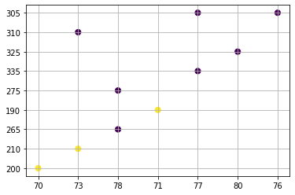
X = nep_dataset[:, 1:3]
print (X)
kmeans = KMeans(n_clusters=2, random_state=0).fit(X)
kmeans.labels_
[['70' '200']
['73' '210']
['78' '265']
['71' '190']
['78' '275']
['77' '335']
['80' '325']
['73' '310']
['77' '305']
['76' '305']]
array([1, 1, 0, 1, 0, 0, 0, 0, 0, 0], dtype=int32)
As we the first 2 items and 4th item are in one cluster while all others in the second cluster
plt.scatter(X[:, 0], X[:, 1], c=y_kmeans, s=50, cmap='viridis')
# colormap viridis: https://matplotlib.org/stable/tutorials/colors/colormaps.html
plt.grid()
plt.show()

If we want to group them into 3 clusters, we need to provide n_clusters=3 as shown below:
kmeans = KMeans(n_clusters=3, random_state=0).fit(X)
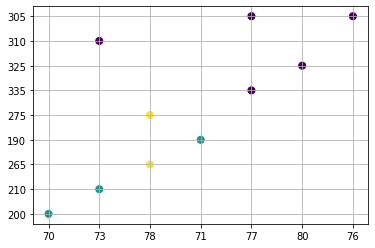
K-Means
Chapter 2 - Basic Linear Algebra needed for ML
DO NOT WORRY ABOUT YOUR DIFFICULTIES IN MATHEMATICS. I CAN ASSURE YOU MINE ARE STILL GREATER - Alert Einstein
“Last time I asked: 'What does mathematics mean to you?', and some people answered: "The manipulation of numbers, the manipulation of structures.' And if I had asked what music means to you, would you have answered: 'The manipulation of notes?” ― Serge Lang, The Beauty of Doing Mathematics
As we know computer are comfortable in dealing with numbers and perform fast operations on those numbers to provide us the results we are interested in. But in our real world we deal with things like words, sentences and images. This creates an impedance mismatch. So obvious solution will be to solve this mismatch is by representing our things in numbers, let us call this as Data Representations.
Linear Algebra what we learned in our high school math class comes to save us here!
In this chapter, we will have a friendly introduction to Linear Algebra.
If you did not have a chance to learn Linear Algebra in your high school, do not worry, I will try to explain in a simplest possible way to understand the Data Representations concepts so we can do Machine Learning work.
"Simplicity is the ultimate sophistication" - Leonardo da Vinci
Let us use Vectors for Data Representations
Ok, what is a Vector?
- Vector is one Dimensional Array of numbers
- It has magnitude (value) and direction

- Example vector with 3 entries
v1 = [1, 2, 3]
When we say n-dimensional vector space we mean this space consists of all vector with n entries. In our vector with 3 entries, 3-dimensional vector space will consist of all the vectors with 3 entries.
Another name vector space is feature, let me explain that in few moments...
How you can draw a point 3D space
from mpl_toolkits import mplot3d
import numpy as np
import matplotlib.pyplot as plt
# width by height here are 10 inches by 10 inches
fig = plt.figure(figsize=(10,10))
# 3d projection
# with position (pos) of subplot as num-of-rows:1, num-of-cols:1, index-of-subplot:1
# If no positional arguments are passed, defaults to (1, 1, 1).
ax = fig.add_subplot(111, projection='3d')
# plot a point
ax.scatter(2,3,4)
plt.show()

What is a feature Vector?
Entries of the feature vectors represent features of the thing (object) this vector is used to represent.
Example: Assume the thing (object) has 3 features: Color, Heaviness and Shape:
- Color = 2
- say number 1 means it is Red
- say number 2 means it is Green
- say number 3 means it is Blue
- Heaviness : 2
- say number 1 means it is light
- say number 2 means it is medium
- say number 3 means it is heavy
- say number 4 means it is super heavy
- Shape : 1
- say number 1 means it is circle
- say number 2 means it is rectangle
- say number 3 means it is square
- say number 4 means it is cube
So this object with Color: Green, Heaviness: medium and Shape: circle is represented (Data Representation) by this feature vector whose entries are:
fv = [2,2,1]
Another example:
The object here is a Patient with:
- height: 64 inches,
- weight: 131 pounds,
- age: 23 years
The patient vector p:
p = [64, 131, 23]

Now we understand how we can provide Data Representation using Feature Vectors.
The Object I have is an Image, how to do the Data Representations for this?
- Black and White Images
- Black: 0
- White: 1
- Gray: 0 to 255
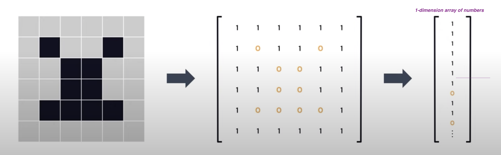
Now we have words in say English dictionary, how to do the Data Representations for these words
-
Naive way:
- words are discrete and independent tokens
- Build Dictionary or tokens
['aardvark', ... 'king', ..., 'queen', ...]- Since we need to convert words to numbers as part of our Data Representations, we can assign numbers to these words
[0, ... 11000, ... 12000, ...]We will find out these large number are not well suited for ML. We can solve this by using a concept called one-hot-vector
[ [1,0,0,0,...], ... [0,0,0,0…1,0,0…], ... [0,0,0,,0,0…1,0,0…] ] ]These vectors have same dimensionality as the number-of-words in the dictionary.
Suppose the English has 100,000 word, the dimension of the one-hot-vector for each word will be 100,000. In that one-hot-vector only one entry in this vector will be 1 and all other entries will be 0.

Disadvantages with one-hot-vector way of Data Representation
- Very high dimensionality
- Do not capture any world knowledge (like: Gender, Part-of-Speech...) about the words
- example: king and queen are more in common with each other than aardvark
- all of these token have 90 degrees angles between them
- example: king and queen are more in common with each other than aardvark
- Let us take a dictionary with only these 3 words
['aardvark', 'king', 'queen']
-
These 3 words in vectors in above 3-dimensional space
-
They are unit vectors aligned to axes
-
We need to find a way the words to occupy the entire this 3-dimensional space instead of perfectly aligning to the axes.
-
More useful Data Representation of words will be continuous vectors in the n-dimensional space
- This will allow aardvark, king and queen to flow anywhere in this 3-dimensional space. So their representations will be real-values like 0.3, 1.9, -0.4 for aardvark

-
Representing world knowledge (like: Gender, Part-of-Speech...)
-
For example for queen [0.1, -0.3, 1.2, -0.4, 0.02, 1.1, -0.25, ... ]
- First 3 entires can represent the aspect of Gender for example
- Next 3 entires can represent the aspect of Part-of-speech for example
-
This mechanism will help us to express relationships between the words as equal to relative vector distance

- For example, for Gender Dimension, king and queen should be far part as man and woman
- In case of Part-of-speech dimensions, all these words should clustered together at a distance zero, since all of them are nouns
- play (verb) and playful (adjective) should be at the same distance as joy and joyful
How we can learn useful embedding (Data Representations)?
-
Wikipedia comes to rescue us here! It is a reliable source of information we can use to learn the useful embeddings:
- has 28 billion words
- 309 languages
-
If we look at the king and queen in Wikipedia, both them have lot of commonality
- They reference each other, includes common words like monarch
- So Wikipedia has word knowledge we can extract to learn the useful embedding for us
-
Wikipedia is freeform text
- Common practice
- Unsupervised text data ---> supervised task
- we can ask the ML model to fill in the gaps and predict the next word as shown below:
- Common practice
King is the title given to male ______ monarch : 70% body : 20% dog: 10%- The ML model could produce a probability distribution over the word in the vocabulary indicating which ones are more likely to follow the word given so far, in our case it is monarch
Eigenvectors
Key points
- Matrices as linear transformations
- Determinants
- Linear Systems
- Change of Bias
Scalar
- A scalar is a number, like :
- \( 2, -5, 0.368 \)
Vector
- Vector can be thought of as a list numbers (can be in a row or column)
-
has rows OR columns
-
2 numbers for 2D space, such as \( (2,4) \)
- \( \begin{bmatrix} 2 \\ 8 \end{bmatrix} \)
-
3 numbers for 3D space, such as \( (1,2,4) \)
- \( \begin{bmatrix} 1 \\ 2 \\ 4 \end{bmatrix} \)
-
- A vector can be in:
- magnitude and direction (Polar) form,
- or in x and y (Cartesian) form
import numpy as np
import matplotlib.pyplot as plt
def plot(V):
origin = np.array([[0, 0, 0],[0, 0, 0]]) # origin point
plt.figure(figsize=(8,8)) # 8 inches x 8 inches
plt.grid()
# Plot a 2D field of arrows.
plt.quiver(*origin, V[:,0], V[:,1], color=['r','b','g'], scale=10)
plt.show()
plot(np.array( [ [2,4] ] ) )
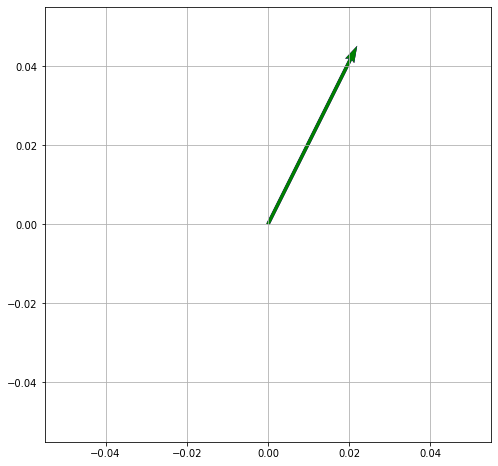
plot(np.array( [ [2,4], [2,3], [-2, 5] ] ) )
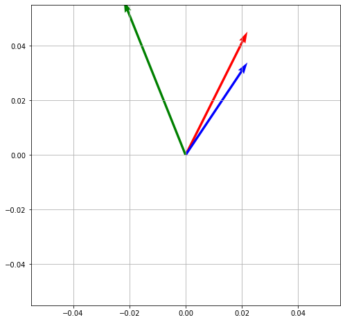
Matrix
-
A Matrix is an array of numbers (one or more rows, one or more columns)
-
Has rows x columns
-
\( \begin{bmatrix} 1 & 2 & 3 \\ 4 & 5 & 6 \\ 7 & 8 & 9 \end{bmatrix} \)
-
\( \begin{bmatrix} 1 & 0 & 0 \\ 0 & 1 & 0 \\ 0 & 0 & 1 \end{bmatrix} \)
-
Note:
- A vector is also a matrix!
- It is special case of a matrix with just one row or one column
- So the rules that work for matrices also work for vectors.
-
We can add and subtract matrices of the same size,
-
multiply one matrix with another as long as the sizes are compatible :
- \( (n × m) × (m × p) = n × p) \)
-
multiply an entire matrix by a constant:
Tensor
Tensor is a generalized matrix.
- 1-D matrix (a vector is actually such a tensor),
- 3-D matrix (something like a cube of numbers),
- 0-D matrix (a single number)
- a higher dimensional structure that is harder to visualize.
- The dimension of the tensor is called its rank.
Liner Transformation described by a matrix
This transformation in 2D :
\( \hat i \longrightarrow \begin{bmatrix} 3 \\ 0 \end{bmatrix} \)
\( \hat j \longrightarrow \begin{bmatrix} 1 \\ 2 \end{bmatrix} \)
is represented by the matrix: \( \begin{bmatrix} 3 & 1 \\ 0 & 2 \end{bmatrix} \)
-
Eigen vectors of the transformation
-
Each Eigen vector has Eigen value associated with it
-
Eigen value is the factor by which it will stretch or squash during the transformation
-
\( \begin{bmatrix} 3 \\ 0 \end{bmatrix} \) will stretch the length by factor of 3 during the transformation
- Eigen value here is 3
-
\( \begin{bmatrix} -1 \\ 1 \end{bmatrix} \) will stretch the length by factor of 2 during the transformation
-
- Eigen value here is 2
-
-
-
Eigen value with 1
- Provides rotation
- No stretching or squashing here, so length of the vector remains same
Eigen Value \( \lambda \)
- Matrix-Vector multiplication
\(A \vec{v} = \lambda \vec{v} \)
-
Scales the Eigen Vector \( \vec{v} \) by \( \lambda \)
-
\( A \) is Transformation matrix
-
\( \vec{v} \) is Eigen Vector of \( A \)
-
Left hand side is Matrix-Vector multiplication
-
Right hand side is Scalar-Vector multiplication
-
Let us make both side as Matrix-Vector multiplication
\(A \vec{v} = \lambda \vec{v} \)
- We can write the scalar \( \lambda \) as product of scalar and a Identity matrix \( I \):
\( \begin{bmatrix} \lambda & 0 & 0 \\ 0 & \lambda & 0 \\ 0 & 0 & \lambda \end{bmatrix} \longrightarrow \lambda \begin{bmatrix} 1 & 0 & 0 \\ 0 & 1 & 0 \\ 0 & 0 & 1 \end{bmatrix} \)
We can write this in terms of Identity matrix:
\( I = \begin{bmatrix} 1 & 0 & 0 \\ 0 & 1 & 0 \\ 0 & 0 & 1 \end{bmatrix} \)
as:
\(A \vec{v} = (\lambda I) \vec{v} \)
so both sides are now Matrix multiplication
so we get:
\(A \vec{v} - (\lambda I) \vec{v} = \vec 0 \)
let us factor out \( \vec{v} \)
\( (A - \lambda I) \vec{v} = \vec 0\)
we have a new Matrix
\( (A - \lambda I) \)
and determinant:
\( det (A - \lambda I) = 0 \)
So:
For this Matrix: \( \begin{bmatrix} 3 & 1 \\ 0 & 2 \end{bmatrix} \) find this Matrix:
\( det( \begin{bmatrix} 3-\lambda & 1 \\ 0 & 2-\lambda \end{bmatrix} ) = ( 3 - \lambda) (2 - \lambda) - (0)(1) = ( 3 - \lambda) (2 - \lambda) \)
we have a quadratic polynominal in \( \lambda \)
\( ( 3 - \lambda) (2 - \lambda) = 0 \)
only possible Eigen values are
\( \lambda = 3 \) or \( \lambda = 2 \)
References
\( \begin{pmatrix} a & b \\ c & d \end{pmatrix} \) \( \hat i \) to \( \begin{bmatrix} 3 & 5 \\ 0 & 10 \end{bmatrix} \) \( \longrightarrow \)
2.1. References
3. ML Models
Simple model
\( y = mx + b \)
where
m = slope (gradient)
b = y-intercept
x is the independent variable
y is the dependent variable depends on m and b
Plotting the equation
\( y = x*2 + 1 \)

import matplotlib.pyplot as plt
import numpy as np
# setup the plot size 10 inches by 10 inches
fig = plt.figure(figsize=(10,10))
# 1 row, 1 col, and index is 1
ax = fig.add_subplot(111)
# put grid in the plot
plt.grid()
# let us generate x values start from -5 to 5 with 100 samples
x = np.linspace(-5,5,100)
print ('Number of samples = {}' .format(len(x)))
ax.spines['left'].set_position('center')
ax.spines['bottom'].set_position('center')
ax.spines['right'].set_color('none')
ax.spines['top'].set_color('none')
# we need ticks at bottom and left
ax.xaxis.set_ticks_position('bottom')
ax.yaxis.set_ticks_position('left')
## our plot function
def plot_eqn(eqn, color, label):
plt.plot(x, eqn, color, label=label)
# put legend at upper left cornor
plt.legend(loc='upper left')
plot_eqn( x*2 + 1, '-r', 'eqn for x*2 + 1')
#plot_eqn( x*2 - 1, '-b', 'eqn for x*2 - 1')
#plot_eqn( x*2 - 3, ':b', 'eqn for x*2 - 3')
#plot_eqn( x*2 + 3, '--m', 'eqn for x*2 + 3')
## show our plot
plt.show()
What happens when we train a ML model for this equation?
- We provide a training dataset with values for x and y
| x | y |
|---|---|
| 2 | 5 |
| 1 | 3 |
| 7 | 15 |
| ... | ... |
- During the training ML Model calculates the optimum value for m and b variables based on the training dataset we have provided
- Once training completed, ML model is ready for predicting value for y for the given x
You: Hey, model my x value is 2, can you predict the value of y?
Model: Sure, it is 5
Word2Vec
Word2vec is a technique for natural language processing (NLP). Word2vec is used to produce word embeddings.
Uses a neural network model to learn word associations from a large corpus of text.
Once trained, such a model can detect synonymous words or suggest additional words for a partial sentence.
Word2vec represents each distinct word with a particular list of numbers called a vector.
The vectors are chosen carefully such that a simple mathematical function (the cosine similarity between the vectors) indicates the level of semantic similarity between the words represented by those vectors.
Takes in large corpus of text as input and produces a vector space, typically of several hundred dimensions, with each unique word in the corpus being assigned a corresponding vector in the space.
- Word vectors are positioned in the vector space such that words that share common contexts in the corpus are located close to one another in the space.
Papers
- Efficient Estimation of Word Representations in Vector Space
- Distributed Representations of Words and Phrases and their Compositionality
Continuous Bag-of-Words Model
- Predicts the middle word based on surrounding context words.
- The context consists of a few words before and after the current (middle) word. This architecture is called a bag-of-words model as the order of words in the context is not important.
Continuous Skip-gram Model
- Predicts words within a certain range before and after the current word in the same sentence.
Consider the following sentence of 8 words:
The wide road shimmered in the hot sun.
The context words for each of the 8 words of this sentence are defined by a window size. The window size determines the span of words on either side of a target_word (one underlined) that can be considered context word. Take a look at this table of skip-grams for target words based on different window sizes.

Training Objective
- Maximize the probability of predicting context words (w) given the target word (\(w_t\)).
- For a sequence of words \(w_1,w_2, ... w_T\), the objective can be written as the average log probability. where \(c\) is the size of the training context.
Playing with Google Word2Vec
import numpy as np
from sklearn.manifold import TSNE
import matplotlib.pyplot as plt
import gensim.downloader as api
word2vec_model = api.load('word2vec-google-news-300')
word2vec_model["green"]
word2vec_model.most_similar("king")
print(word2vec_model.most_similar(positive=['king', 'girl'], negative=['boy'], topn=2))
vocab = ['apple', 'mango', 'sitar', 'violin', 'piano', 'pear', 'jackfruit', 'drums','beach', 'mountain', 'cloud' , 'laptop', 'minicomputer']
# TSNE T-distributed Stochastic Neighbor Embedding.
"""
t-SNE [1] is a tool to visualize high-dimensional data.
Refer: https://scikit-learn.org/stable/modules/generated/sklearn.manifold.TSNE.html
"""
def tsne_plot(model):
labels = []
wordvecs = []
for word in vocab:
wordvecs.append(model[word]) # add the wordvecs for the 'word'
labels.append(word)
tsne_model = TSNE(perplexity=3, n_components=2, init='pca', random_state=42)
# n_components Dimension of the embedded space.
# random_state : determines the random number generator
coordinates = tsne_model.fit_transform(wordvecs)
# prepare 2-d data (x,y)
x = []
y = []
for value in coordinates:
x.append(value[0])
y.append(value[1])
plt.figure(figsize=(12,12)) # 12 inches x 12 inches
for i in range(len(x)):
plt.scatter(x[i],y[i])
plt.annotate(labels[i],
xy=(x[i], y[i]),
xytext=(2, 2),
textcoords='offset points',
ha='right',
va='bottom')
plt.grid()
plt.show()
tsne_plot(word2vec_model)

Notebooks
Videos
Word embedding
Word embedding is a term used for the representation of words for text analysis, typically in the form of a real-valued vector that encodes the meaning of the word such that: - the words that are closer in the vector space are expected to be similar in meaning
GloVe - Global Vectors for Word Representation
GloVe is an unsupervised learning algorithm for obtaining vector representations for words.
Training is performed on aggregated global word-word co-occurrence statistics from a corpus, and the resulting representations showcase interesting linear substructures of the word vector space.
Playing with GloVe
import matplotlib as plt
import numpy as np
from sklearn.manifold import TSNE
Get word vectors (tranined on Wikipedia) from gensim
- 376MB size file
import gensim.downloader as dn
gensim_wiki_model = dn.load('glove-wiki-gigaword-300')
## 300 is dimensions
Let us find the vector representation of a given word
def get_vec_rep(word : str) :
return gensim_wiki_model[word]
def get_most_similar(word : str) :
return gensim_wiki_model.most_similar(word)
print(get_vec_rep('green'))
[ 9.7111e-02 -3.9549e-01 5.0061e-01 -2.6536e-01 8.1473e-02 -5.1845e-01
2.4072e-01 3.1200e-01 2.8080e-02 -6.8087e-01 3.8081e-01 -2.0683e-01
-2.0663e-01 4.7282e-01 3.9394e-01 2.7941e-01 -7.5484e-01 1.4609e-01
-4.7726e-01 4.5302e-01 -2.0524e-01 1.6755e-01 -1.8848e-01 2.1746e-01
9.6432e-02 -6.8901e-01 -8.8415e-02 2.9760e-01 -2.1951e-01 1.2810e-02
-1.7955e-03 -2.5013e-03 -2.7744e-01 3.7136e-01 -9.8262e-01 6.8767e-01
2.6734e-01 -6.3868e-01 -3.1059e-01 -5.6088e-01 -1.4389e-02 1.8422e-01
...
]
print(get_most_similar('king'))
[
('queen', 0.6336469054222107),
('prince', 0.619662344455719),
('monarch', 0.5899620652198792),
('kingdom', 0.5791267156600952),
('throne', 0.5606487989425659),
('ii', 0.5562329888343811),
('iii', 0.5503199100494385),
('crown', 0.5224862694740295),
('reign', 0.521735429763794),
('kings', 0.5066401362419128)
]
- What is king - boy + girl?
print(gensim_wiki_model.most_similar(positive=['king', 'girl'], negative=['boy'], topn=2))
[('queen', 0.6850624680519104),
('monarch', 0.5474708676338196)
]
Plotting
## Plotting
vocab = ['apple', 'mango', 'sitar', 'violin', 'piano', 'pear', 'jackfruit', 'drums','beach', 'mountain', 'cloud' , 'laptop', 'minicomputer']
# TSNE T-distributed Stochastic Neighbor Embedding.
"""
t-SNE [1] is a tool to visualize high-dimensional data.
Refer: https://scikit-learn.org/stable/modules/generated/sklearn.manifold.TSNE.html
"""
def tsne_plot(model):
labels = []
wordvecs = []
for word in vocab:
wordvecs.append(model[word]) # add the wordvecs for the 'word'
labels.append(word)
tsne_model = TSNE(perplexity=3, n_components=2, init='pca', random_state=42)
# n_components Dimension of the embedded space.
# random_state : determines the random number generator
coordinates = tsne_model.fit_transform(wordvecs)
# prepare 2-d data (x,y)
x = []
y = []
for value in coordinates:
x.append(value[0])
y.append(value[1])
plt.figure(figsize=(12,12)) # 12 inches x 12 inches
for i in range(len(x)):
plt.scatter(x[i],y[i])
plt.annotate(labels[i],
xy=(x[i], y[i]),
xytext=(2, 2),
textcoords='offset points',
ha='right',
va='bottom')
plt.grid()
plt.show()
tsne_plot(gensim_wiki_model)
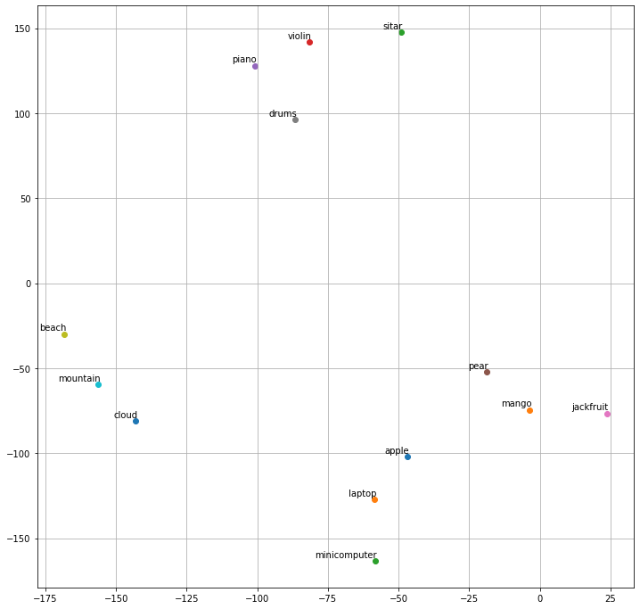
References
4. Deep Learning
Neural Network
Neural networks is a beautiful biologically-inspired programming paradigm which enables a computer to learn from observational data.
Deep learning, a powerful set of techniques for learning in neural networks.
Provide solutions in :
- image recognition
- speech recognition
- natural language processing (NLP)
Gradient descent
Gradient descent is an optimization algorithm used to:
- minimize some function (cost function) by iteratively moving in the direction of steepest descent as defined by the negative of the gradient.
In machine learning, we use gradient descent to update the parameters (weights and biases) of our model.

- Starting at the top of the mountain, we take our first step downhill in the direction specified by the negative gradient.
- Next we recalculate the negative gradient (passing in the coordinates of our new point) and take another step in the direction it specifies.
- We continue this process iteratively until we get to the bottom of our graph, or to a point where we can no longer move downhill.
Learning Rate
The size of these steps is called the learning rate.
With a high learning rate we can cover more ground each step, but we risk overshooting the lowest point since the slope of the hill is constantly changing.
With a very low learning rate, we can confidently move in the direction of the negative gradient since we are recalculating it so frequently. A low learning rate is more precise, but calculating the gradient is time-consuming, so it will take us a very long time to get to the bottom.
Cost function
-
It is a loss function.
-
It is a measure of how wrong the model is in terms of its ability to estimate the relationship between x and y
-
It is a measure of how far we are away from the target:
- \(y - (mx + b)\)
- Cost function :
- \[ f(m,b) = \frac{1}{N} \sum_{i=0}^n (y_i - (mx_i + b))^2 \]
-
This tells us how bad our model is at making predictions for a given set of parameters.
The cost function has its own curve and its own gradients. The slope of this curve tells us how to update our parameters (weight) to make the model more accurate.
We run gradient descent using our cost function.
- Calculate the partial derivatives of the cost function \( f(m,b) \) with respect to each parameter( m and b) and store the results in a gradient.
- This new gradient tells us the slope of our cost function at our current position (current parameter values) and the direction we should move to update our parameters (m and b).
Derivative
Derivative of a function of a real variable measures the sensitivity to change of the function value (output value) with respect to a change in its argument (input value).

The slope of the tangent line is equal to the derivative of the function at the marked point.
Partial derivative
-
Partial derivative of a function of several variables (in our case m and b) is:
- its derivative with respect to one of those variables.
-
with respect to m (weight): \( \frac{df}{dm}\)
- -2x(y - (mx + b))
- \[ \frac{1}{N} \sum_{i=0}^n -2x_i(y_i - (mx_i + b)) \]
-
with respect to b (bias): \( \frac{df}{db}\)
- -2(y - (mx + b))
- \[ \frac{1}{N} \sum_{i=0}^n -2(y_i - (mx_i + b)) \]
# Y is target for the given input X
# mx + b is predicted
# learning_rate is size of the steps
def update_weights(m, b, X, Y, learning_rate):
m_deriv = 0
b_deriv = 0
N = len(X)
for i in range(N):
# Calculate partial derivatives
# -2x(y - (mx + b))
m_deriv += -2*X[i] * (Y[i] - (m*X[i] + b))
# -2(y - (mx + b))
b_deriv += -2*(Y[i] - (m*X[i] + b))
# We subtract because the derivatives point in direction of steepest ascent
m -= (m_deriv / float(N)) * learning_rate
b -= (b_deriv / float(N)) * learning_rate
return m, b
Back Propagation
Calculus
Activation Function
Activation function is a function that is added into an artificial neural network in order to help the network learn complex patterns in the data.
When comparing with a neuron-based model that is in our brains, the activation function is at the end deciding what is to be fired to the next neuron
Sigmoid function
A sigmoid function is a mathematical function having a characteristic "S"-shaped curve or sigmoid curve.
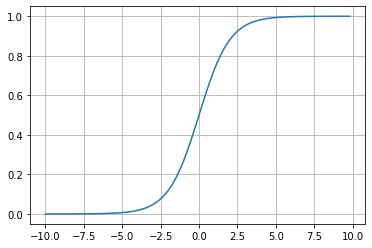
- \( \sigma(x) = \frac{1}{1 + e^{-x}}\)
import math
import matplotlib.pyplot as plt
import numpy as np
def sigmoid(x):
a = []
for item in x:
a.append(1/(1 + math.exp(-item)))
return a
x = np.arange(-10., 10., 0.2)
sig = sigmoid(x)
# plot sig
plt.plot(x,sig)
plt.show()
Hyperbolic tangent activation function
It is also referred the \(Tanh\) (also “tanh” and “TanH“) function. It is very similar to the sigmoid activation function and even has the same S-shape. The function takes any real value as input and outputs values in the range -1 to 1.
# plot for the tanh activation function
from math import exp
import matplotlib.pyplot as plt
# tanh activation function
def tanh(x):
return (exp(x) - exp(-x)) / (exp(x) + exp(-x))
# define input data
inputs = [x for x in range(-10, 10)]
# calculate outputs
outputs = [tanh(x) for x in inputs]
# plot inputs vs outputs
plt.plot(inputs, outputs)
plt.grid()
plt.show()
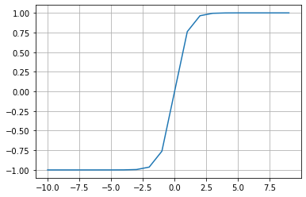
Refer: How to Choose an Activation Function for Deep Learnin
Softmax
from numpy import exp
# softmax activation function
def softmax(x):
return exp(x) / exp(x).sum()
# define input data
inputs = [1.0, 3.0, 2.0]
# calculate outputs
outputs = softmax(inputs)
# report the probabilities
print(outputs)
# report the sum of the probabilities
print(outputs.sum())
[0.09003057 0.66524096 0.24472847]
1.0
Rectified Linear Activation Function
A node or unit that implements this activation function is referred to as a rectified linear activation unit, or ReLU for short.
# demonstrate the rectified linear function
# rectified linear function
def rectified(x):
return max(0.0, x)
# demonstrate with a positive input
x = 1.0
print('rectified(%.1f) is %.1f' % (x, rectified(x)))
x = 1000.0
print('rectified(%.1f) is %.1f' % (x, rectified(x)))
# demonstrate with a zero input
x = 0.0
print('rectified(%.1f) is %.1f' % (x, rectified(x)))
# demonstrate with a negative input
x = -1.0
print('rectified(%.1f) is %.1f' % (x, rectified(x)))
x = -1000.0
print('rectified(%.1f) is %.1f' % (x, rectified(x)))
Plotting
# plot inputs and outputs
from matplotlib import pyplot
# rectified linear function
def rectified(x):
return max(0.0, x)
# define a series of inputs
series_in = [x for x in range(-10, 11)]
# calculate outputs for our inputs
series_out = [rectified(x) for x in series_in]
# line plot of raw inputs to rectified outputs
pyplot.plot(series_in, series_out)
pyplot.show()
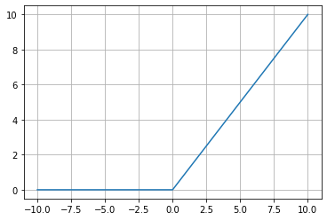
Convolutional Neural Networks
Resources
-
[Hardware and Software][http://cs231n.stanford.edu/slides/2021/lecture_6.pdf]
-
Convolutional Neural Networks - Lecture-7 - Training Neural Networks - Part-1s
-
Convolutional Neural Networks - Lecture-7 - Training Neural Networks - Part-2
Recurrent Neural Networks
Generative Models
Given training data, generate new samples from same distribution
References
MNIST
The MNIST database Modified National Institute of Standards and Technology database is a large database of handwritten digits that is commonly used for training various image processing systems.

Sample Application for handwritten digit recognition
5. Tensorflow
Distributed Training with Tensorflow
Deep Learning involves very large datasets.
Faster model training time helps to provide faster iterations to reach model goals faster and trying new ideas.
Distribution is not automatic.
In case of a 4 GPU hardware:
| GPU# | Name | Temp | PowerUsage | GPU Util |
|---|---|---|---|---|
| 0 | Tesla | 59C | 113/250W | 72% |
| 1 | Tesla | 52C | 113/250W | 0% |
| 2 | Tesla | 50C | 113/250W | 0% |
| 3 | Tesla | 59C | 113/250W | 0% |
To enable to use of all GPUs, modeling code needs to be modified to make TensorFlow to coordinate across the GPUs at runtime.
Model Parallelism
- Running independent parts of the computations which we can run in parallel.
WX(matrix multpicaton) is done at gpu-0 which adding (add op) withbbias is done at gpu-1
Data Parallelism
- Works with any model architecture, so widely adopted.
# Linear Model, W: Weights, b: Bias
y_pred = WX + b
# Equivalent to a keras Dense single unit
tf.keras.layers.Dense(units=1)
model.fit(x,y, batch_size=32)
For each step of the model training, a batch of data is used to calculate gradients. Thus obtained gradients are used to update the weights of the model. Larger the batch size, the more accurate the gradients are. Making batch size too large will make us to run out of GPU memory.
# with data parallelism we can add NUM_GPUS in the batch_size
model.fit(x,y, batch_size=32 * NUM_GPUS)
Each GPU gets a separate slice of the data, calculate the gradients, and those gradients are averaged. So the model is able to see more data during each training step. So less time is taken to finish an epoch (a full pass to the training data)
Synchronous Data Parallelism
Asynchronous Data Parallelism
TensorFlow.js
TensorFlow.js (TFJS) is a library for machine learning in JavaScript. Using TFJS you can develop ML models in JavaScript, and use ML directly in the browser or in Node.js.
Browser
<script src="https://cdn.jsdelivr.net/npm/@tensorflow/tfjs@2.0.0/dist/tf.min.js"></script>
Node.js
# install TensorFlow.js. using npm or yarn
yarn add @tensorflow/tfjs
# Install TensorFlow.js with native C++ bindings.
yarn add @tensorflow/tfjs-node
# if your system has a NVIDIA® GPU with CUDA support, use the GPU package even for higher performance.
yarn add @tensorflow/tfjs-node-gpu
const tf = require('@tensorflow/tfjs');
// Optional Load the binding:
// Use '@tensorflow/tfjs-node-gpu' if running with GPU.
require('@tensorflow/tfjs-node');
// Train a simple model:
const model = tf.sequential();
model.add(tf.layers.dense({units: 100, activation: 'relu', inputShape: [10]}));
model.add(tf.layers.dense({units: 1, activation: 'linear'}));
model.compile({optimizer: 'sgd', loss: 'meanSquaredError'});
const xs = tf.randomNormal([100, 10]);
const ys = tf.randomNormal([100, 1]);
model.fit(xs, ys, {
epochs: 100,
callbacks: {
onEpochEnd: (epoch, log) => console.log(`Epoch ${epoch}: loss = ${log.loss}`)
}
});
6. PyTorch
PyTorch is an open source machine learning library based on the Torch library, used for applications such as :
- computer vision
- natural language processing primarily developed by Facebook's AI Research lab.
Quick Start
7. Transformers
A transformer is a deep learning model that adopts the mechanism of self-attention, differentially weighting the significance of each part of the input data.
Like recurrent neural networks (RNNs), transformers are designed to handle sequential input data, such as natural language, for tasks such as translation and text summarization. However, unlike RNNs, transformers do not necessarily process the data in order. Instead the attention mechanism provides context for any position in the input sequence.
For example, if the input data is a natural language sentence, the transformer does not need to process the beginning of the sentence before the end. Rather, it identifies the context that confers meaning to each word in the sentence. This feature allows for more parallelization than RNNs and therefore reduces training times.
Before transformers, most state-of-the-art NLP systems relied on gated RNNs, such as LSTM and gated recurrent units (GRUs), with added attention mechanisms.
Transformers are built on these attention technologies without using an RNN structure, highlighting the fact that attention mechanisms alone can match the performance of RNNs with attention.
Gated RNNs process tokens sequentially, maintaining a state vector that contains a representation of the data seen after every token.
To process the nth token, the model combines the state representing the sentence up to token n-1 with the information of the new token to create a new state, representing the sentence up to token n.
Theoretically, the information from one token can propagate arbitrarily far down the sequence, if at every point the state continues to encode contextual information about the token.
In practice this mechanism is flawed: the vanishing gradient problem leaves the model's state at the end of a long sentence without precise, extractable information about preceding tokens.
This problem was addressed by attention mechanisms. Attention mechanisms let a model draw from the state at any preceding point along the sequence.
The attention layer can access all previous states and weigh them according to a learned measure of relevancy, providing relevant information about far-away tokens.
A clear example of the value of attention is in language translation, where context is essential to assign the meaning of a word in a sentence. In an English-to-French translation system, the first word of the French output most probably depends heavily on the first few words of the English input. However, in a classic LSTM model, in order to produce the first word of the French output, the model is given only the state vector of the last English word. Theoretically, this vector can encode information about the whole English sentence, giving the model all necessary knowledge. In practice, this information is often poorly preserved by the LSTM. An attention mechanism can be added to address this problem: - the decoder is given access to the state vectors of every English input word, not just the last, and can learn attention weights that dictate how much to attend to each English input state vector.
Transformers use an attention mechanism without an RNN
- processing all tokens at the same time
- calculating attention weights between them in successive layers.
Vanishing Gradient problem
In machine learning, the vanishing gradient problem is encountered when training artificial neural networks with gradient-based learning methods and backpropagation. - In such methods, each of the neural network's weights receives an update proportional to the partial derivative of the error function with respect to the current weight in each iteration of training. - The problem is that in some cases, the gradient will be vanishingly small, effectively preventing the weight from changing its value - In the worst case, this may completely stop the neural network from further training
BERT
BERT, which stands for Bidirectional Encoder Representations from Transformers, is based on Transformers, a deep learning model in which every output element is connected to every input element, and the weightings between them are dynamically calculated based upon their connection.
BERT is a technology to generate contextualized word embeddings/vectors, which is its biggest advantage but also it's biggest disadvantage as it is very compute-intensive at inference time, meaning that if you want to use it in production at scale, it can become costly.
Transformer encoder reads the entire sequence of words at once. Therefore it is considered bidirectional, though it would be more accurate to say that it’s non-directional. This characteristic allows the model to learn the context of a word based on all of its surroundings (left and right of the word)
- BERT: Pre-training of Deep Bidirectional Transformers for Language Understanding
- The Illustrated BERT, ELMo, and co. (How NLP Cracked Transfer Learning)
- Hugging face - BERT
GPT
Generative Pre-trained Transformer (GPT)
GPT-2
GPT-2 is a large transformer-based language model with 1.5 billion parameters, trained on a dataset of 8 million web pages. GPT-2 is trained with a simple objective:
- predict the next word, given all of the previous words within some text.
- The diversity of the dataset causes this simple goal to contain naturally occurring demonstrations of many tasks across diverse domains.
- GPT-2 is a direct scale-up of GPT, with more than 10X the parameters and trained on more than 10X the amount of data.
" We (OpenAI) created a new dataset which emphasizes diversity of content, by scraping content from the Internet. In order to preserve document quality, we used only pages which have been curated/filtered by humans—specifically, we used outbound links from Reddit which received at least 3 karma. This can be thought of as a heuristic indicator for whether other users found the link interesting (whether educational or funny), leading to higher data quality than other similar datasets, such as CommonCrawl."
GPT-2 algorithm was trained on the task of language modeling--- which tests a program's ability to predict the next word in a given sentence--by ingesting huge numbers of articles, blogs, and websites. By using just this data it achieved state-of-the-art scores on a number of unseen language tests, an achievement known as zero-shot learning. It can also perform other writing-related tasks, like translating text from one language to another, summarizing long articles, and answering trivia questions.
Zero-shot learning
Zero-shot learning (ZSL) is a problem setup in machine learning, where at test time, a learner observes samples from classes that were not observed during training, and needs to predict the class they belong to.
GPT-3
Generative Pre-trained Transformer 3 is an autoregressive language model that uses deep learning to produce human-like text.
It is the third-generation language prediction model in the GPT-n series created by OpenAI.
GPT-3 is a very large language model (the largest till date) with about 175B parameters. It is trained on about 45TB of text data from different datasets.
- Language Models are Few-Shot Learners
- GPT-3 - paper with code
- Language Models are Unsupervised Multitask Learners
- Better Language Models and Their Implication
T5
GitHub Copilot
When we type this:
function calculateDaysBetweenDates(date1, date2) {
Copilot will complete this function:
function calculateDaysBetweenDates(date1, date2) {
// following lines are written by copilot
var oneDay = 24 * 60 * 60 * 1000;
var date1InMillis = date1.getTime();
var date2InMillis = date2.getTime();
var days = Math.round(Math.abs(date2InMillis - date1InMillis) / oneDay);
return days;
}
\( \int x dx = \frac{x^2}{2} + C \)
\( \int y dy = \frac{y^3}{5} \)
References
Transformers
- Illustrated Guide to Transformers Neural Network: A step by step explanation
- CS480/680 Lecture 19: Attention and Transformer Networks
- LSTM is dead. Long Live Transformers!
Open AI
Codex
- natural language to code
- Creating a Space Game with OpenAI Codex
- OpenAI Codex
Github Copilot
- Trained on billions of lines of public code
- Your AI pair programmer
- VS Code extension
Matplotlib
Matplotlib: Plot a Function y=f(x)
9. Salesforce Einstein
With Salesforce Einstein, we can: • Build custom predictions and recommendations with clicks • Embed predictive insights into any record or in any app • Operationalize AI by adding it to every workflow or business process
Machine Learning
Einstein Discovery
Einstein Discovery automatically provides explanations and makes recommendations based on all your data sources so they can get smart insights, without the need of a data scientist.
Einstein Prediction Builder
Einstein Prediction Builder helps you to predict the business outcomes, such as :
- churn or lifetime value. Create custom AI models on any Salesforce Object field or Object with clicks, not code.
- The big book of customer predictions - Get closer to your customers with Salesforce Einstein
Einstein Next Best Action
Einstein Next Best Action delivers proven recommendations to employees and customers, right in the apps where they work.
- Define recommendations, create action strategies, build predictive models, display recommendations, and activate automation.
Natural Language Processing
Einstein Language
Einstein Language helps you to understand:
- how customers feel,
- automatically route inquiries
- streamline your workflows.
Build natural language processing (NLP) into your apps to classify the underlying intent and sentiment in a body of text, no matter what the language.
Einstein Bots
Einstein Bots helps you to easily build, train, and deploy custom bots on digital channels that are connected to your CRM data.
- Enhance business processes, empower your employees, and delight your customers.
- Einstein for Service: AI-POWERED CUSTOMER SERVICE
Computer Vision
Einstein Vision
Einstein Vision helps you to see the entire conversation about your brand on social media and beyond.
- Use intelligent image recognition in your apps by training deep learning models to recognize your brand, products, and more.
- Get Started Using Deep Learning for Business Users & Techies
10. Google Cloud Platform
Dataflow
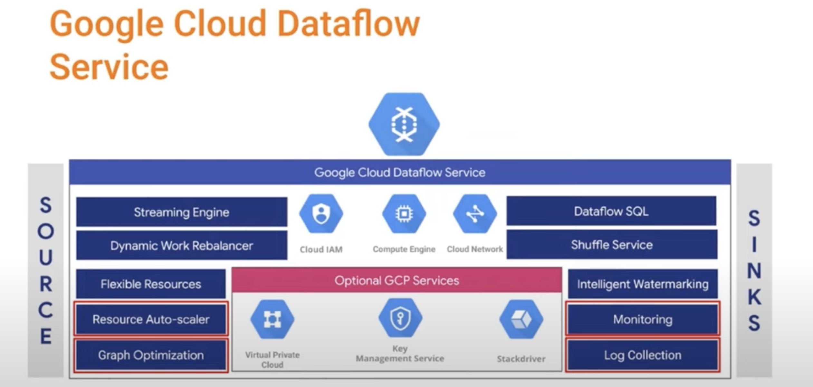
11. Processing Units
CPU
CPU is constructed from millions of transistors. It can have multiple processing cores and is commonly referred to as the brain of the computer. It is essential to all modern computing systems as it executes the commands and processes needed for your computer and operating system. The CPU is also important in determining how fast programs can run, from surfing the web to building spreadsheets.
The CPU is suited to a wide variety of workloads, especially those for which latency or per-core performance are important. A powerful execution engine, the CPU focuses its **smaller number of cores on individual tasks and on getting things done quickly. This makes it uniquely well equipped for jobs ranging from serial computing to running databases.
Intel's Sandy Bridge Architecture ( 32 nm micro architecture)

GPU
The GPU is a processor that is made up of many smaller and more specialized cores. By working together, these cores deliver massive performance when a processing task can be divided up and processed across these cores.
GPUs began as specialized ASICs - Application Specific Integrated Circuit developed to accelerate specific 3D rendering tasks.
Over time, these fixed-function engines became more programmable and more flexible. While graphics and the increasingly lifelike visuals of today’s top games remain their principal function, GPUs have evolved to become more general-purpose parallel processors as well, handling a growing range of applications.
Initially GPUs were solving computer graphics related problems in Gaming The General Purpose GPU (GPGPU) plays a vital role in the deep learning and parallel computing.
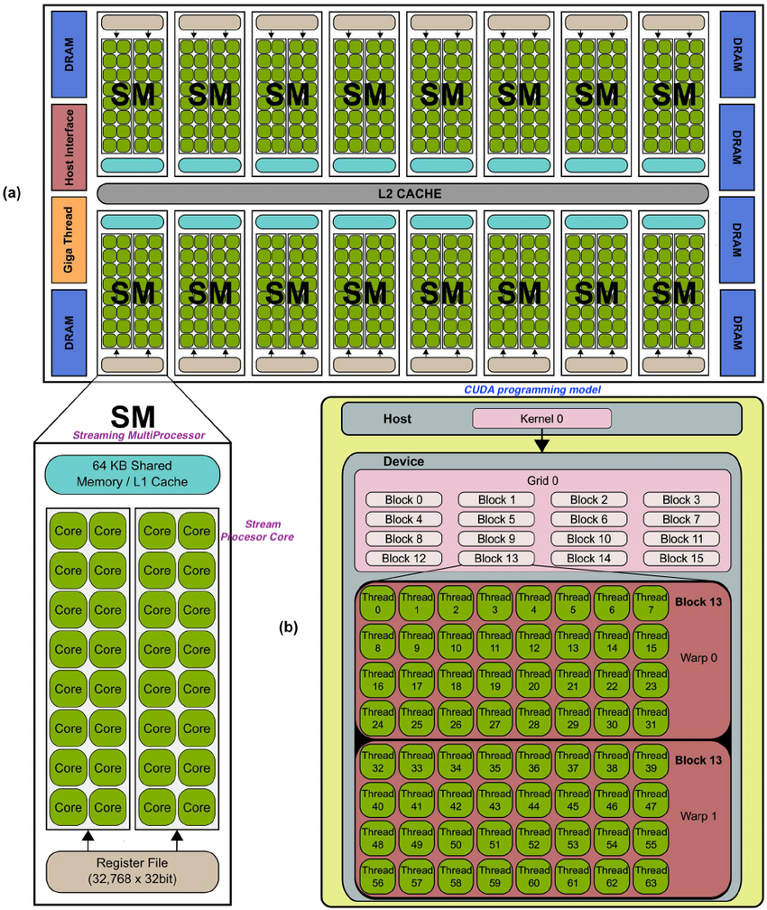
What is CUDA?
Compute Unified Device Architecture (CUDA) is is a parallel computing platform developed by NVIDIA. It enables software programs to perform calculations using both the CPU and GPU.
TPU - Tensor Processing Units
TPUs are Google’s custom-developed application-specific integrated circuits (ASICs) used to accelerate machine learning workloads.
Designed from the ground up with the benefit of Google’s deep experience and leadership in machine learning.
Enable us to run our machine learning workloads on Google’s TPU accelerator hardware using TensorFlow
Designed for maximum performance and flexibility to help researchers, developers, and businesses to build TensorFlow compute clusters that can leverage CPUs, GPUs, and TPUs.
High-level TensorFlow APIs help us to get models running on the Cloud TPU hardware.
Advantages for using TPUs
-
Cloud TPU resources accelerate the performance of linear algebra computation, which is used heavily in machine learning applications.
-
TPUs minimize the time-to-accuracy when you train large, complex neural network models. Weeks to hours (150 times faster)
- Models that previously took weeks to train on other hardware platforms can converge in hours on TPUs.
TPU v3
A TPU v3 board contains four TPU chips and 32 GiB of HBM. Each TPU chip contains two cores. Each core has a MXU, a vector unit, and a scalar unit.

11. ML Pipelines
ML Ops or MLOps
Set of practices that aims to deploy and maintain machine learning models in production reliably and efficiently.
The word MLOps is a compound of machine learning and the continuous development practice of DevOps in the software field.
- Machine learning models are tested and developed in isolated experimental systems.
- When an algorithm is ready to be launched, MLOps is practiced between Data Scientists, DevOps, and Machine Learning engineers to transition the algorithm to production systems.
- MLOps seeks to increase automation and improve the quality of production models, while also focusing on business and regulatory requirements.


Papers
Salesforce TransmogrifAI
- AutoML library for building modular, reusable, strongly typed machine learning workflows on Apache Spark with minimal hand-tuning
- Transmogrification as the process of transforming, often in a surprising or magical manner, which is what TransmogrifAI does for Salesforce
- enabling data science teams to transform customer data into meaningful, actionable predictions
- thousands of customer-specific machine learning models have been deployed across the platform, powering more than 3 billion predictions every day.
TransmogrifAI is a library built on Scala and SparkML that does precisely this.
With just a few lines of code, a data scientist can automate data cleansing, feature engineering, and model selection to arrive at a performant model from which she can explore and iterate further.

Type Safety: The TransmogrifAI Feature type hierarchy

Transmogrification These transformations are not just about getting the data into a format which algorithms can use, TransmogrifAI also optimizes the transformations to make it easier for machine learning algorithms to learn from the data.
- For example, it might transform a numeric feature like age into the most appropriate age buckets for a particular problem — age buckets for the fashion industry might differ from wealth management age buckets.
TransgmogrifAI has algorithms that perform automatic feature validation to remove features with little to no predictive power. - Example: Closed Deal Amount
The TransmogrifAI Model Selector runs a tournament of several different machine learning algorithms on the data and uses the average validation error to automatically choose the best one
TransmogrifAI comes with some techniques for automatically tuning these hyperparameters and a framework to extend to more advanced tuning techniques.
// Read the Deal data
val dealData = DataReaders.Simple.csvCase[Deal](path = pathToData).readDataset().toDF()
// Extract response and predictor Features
val (isClosed, predictors) = FeatureBuilder.fromDataFrame[RealNN](dealData, response = "isClosed")
// Automated feature engineering
val featureVector = predictors.transmogrify()
// Automated feature validation
val cleanFeatures = isClosed.sanityCheck(featureVector, removeBadFeatures = true)
// Automated model selection
val (pred, raw, prob) = BinaryClassificationModelSelector().setInput(isClosed, cleanFeatures).getOutput()
// Setting up the workflow and training the model
val model = new OpWorkflow().setInputDataset(dealData).setResultFeatures(pred).train()
TransmogrifAI is built on top of Apache Spark
-
Able to handle large variation in the size of the data
- Some use cases involve tens of millions of records that need to be aggregated or joined, others depend on a few thousands of records.
-
Spark has primitives for dealing with distributed joins and aggregates on big data
-
Able to serve our machine learning models in both a batch and streaming (Spark Streaming) setting
-
Transmogrification, Feature Validation, and Model Selection above, are all powered by Estimators)
- A Feature is essentially a type-safe pointer to a column in a DataFrame and contains all the information about that column — its name, the type of data it contains, as well as lineage information about how it was derived.
-
TransmogrifAI provides the ability to easily define features that are the result of complex time-series aggregates and joins
-
Features are strongly typed. This allows TransmogrifAI to do type checks on the entire machine learning workflow, and ensure that errors are caught as early on as possible instead of hours into a running pipeline
-
Developers can easily specify custom transformers and estimators to be used in the pipeline
val lowerCaseText = textFeature.map[Text](_.value.map(_.toLowerCase).toText)
Scale and performance
- With automated feature engineering, data scientists can easily blow up the feature space, and end up with wide DataFrames that are hard for Spark to deal with.
- TransmogrifAI workflows address this by inferring the entire DAG of transformations that are needed to materialize features, and optimize the execution of this DAG by collapsing all transformations that occur at the same level of the DAG into a single operation.
Summary
TransmogrifAI enables our data scientists to deploy thousands of models in production with minimal hand tuning and reducing the average turn-around time for training a performant model from weeks to just a couple of hours.
TensorFlow Serving
TensorFlow Serving is a flexible, high-performance serving system for machine learning models, designed for production environments.
TensorFlow Serving makes it easy to deploy new algorithms and experiments, while keeping the same server architecture and APIs.
TensorFlow Serving provides out-of-the-box integration with TensorFlow models, but can be easily extended to serve other types of models and data.
TensorFlow Extended (TFX)
TFX is a Google-production-scale machine learning (ML) platform based on TensorFlow.
It provides a configuration framework and shared libraries to integrate common components needed to define, launch, and monitor your machine learning system.
Apache Airflow
Apache Airflow is a platform to programmatically author, schedule and monitor workflows. TFX (TensorFlow Extended) uses Airflow to author workflows as directed acyclic graphs (DAGs) of tasks.
The Airflow scheduler executes tasks on an array of workers while following the specified dependencies.
Rich command line utilities (CLI) make performing complex surgeries on DAGs a snap. The rich user interface (UI) makes it easy to:
- visualize pipelines running in production,
- monitor progress,
- troubleshoot issues when needed.
When workflows are defined as code, they become more maintainable, versionable, testable, and collaborative.
DAG
DAG (directed acyclic graph) is a directed graph with no directed cycles. That is, it consists of vertices and edges, with each edge directed from one vertex to another, such that following those directions will never form a closed loop.
Apache Beam
Apache Bean help us to implement batch and streaming data processing jobs that run on any execution engine.
Several TFX (TensorFlow Extended) components rely on Beam for distributed data processing. In addition, TFX can use Apache Beam to orchestrate and execute the pipeline DAG.
Beam orchestrator uses a different BeamRunner than the one which is used for component data processing. With the default DirectRunner setup the Beam orchestrator can be used for local debugging without incurring the extra Airflow or Kubeflow dependencies, which simplifies system configuration.

Kubeflow
The Kubeflow project is dedicated to making deployments of machine learning (ML) workflows on Kubernetes simple, portable and scalable.

Kubeflow is an open source ML platform dedicated to making deployments of machine learning (ML) workflows on Kubernetes simple, portable and scalable.
Kubeflow Pipelines is part of the Kubeflow platform that enables composition and execution of reproducible workflows on Kubeflow, integrated with experimentation and notebook based experiences.
Kubeflow Pipelines services on Kubernetes include the hosted Metadata store, container based orchestration engine, notebook server, and UI to help users develop, run, and manage complex ML pipelines at scale.
The Kubeflow Pipelines SDK allows for creation and sharing of components and composition and of pipelines programmatically.
Kubernetes
Kubernetes is an open-source container-orchestration system for automating computer application
- deployment
- scaling
- management
It was originally designed by Google and is now maintained by the Cloud Native Computing Foundation.
References
AutoML
AutoML makes the power of machine learning available to you even if you have limited knowledge of machine learning.
You can use AutoML to build on Google's machine learning capabilities to create your own custom machine learning models that are tailored to your business needs, and then integrate those models into your applications and web sites.
Kubernetes
12. Speedup
In this chapter we will see the ways to speed up Machine Learning
12. JAX

JAX is a new library from Google Research. JAX can automatically differentiate native Python and Numpy functions.
- Loops
- Branches
- Recursion
- Closures
- Can take Derivative of Derivatives
- Supports reverse mode differentiation, also known as [Back Propagation] using Grad function
- Supports forward mode differentiation
XLA
XLA is Accelerated Linear Algebra.
-
It is a domain-specific compiler for linear algebra that can accelerate TensorFlow models with potentially no source code changes.
-
Performs optimizations like:
- Fusing operations together (something like consolidation) so the intermediate results do not have to written out the memory. Instead it get streamed into next operation.
- This enable faster and more efficient processing
This is some what crudely equal to nodejs stream: - Refer: TableauCRM CLI using this stream concept, where it loads data from a Oracle SQL Query results directly into Tableau CRM dataset - refer: sfdx mohanc:ea:dataset:loadFromOra
def model (x, y, z): return tf.reduce_sum( x + y * z)
JAX uses XLA to compile and run our Numpy program on GPUs and TPUs
JAX uses JIT (just-in-time) compile of custom functions into XLA optimized kernels using decorator @jit
@jit # jit decorator
def update(params, x, y):
grads = gard(loss)(params, x, y)
return [ (w - step_size * dw, b - step_size * db) for (w, b), (dw, db) in zip (params, grads)]
pmap
- JAX applies pmap (Parallel Map) replicating computations across multiple cores

Autograd
Autograd (https://github.com/hips/autograd) can automatically differentiate native Python and Numpy code.
Functions available for the transformations
- grad
- jit
- pmap
- vmap - automatic vectorization
- allowing us to turn a function which can handle only one data point into a function which can handle batch of these data points of any size with just one wrapper function vmap
Sample - MNIST
import jax.numpy as jnp
from jax import grad, vmap, jit
def predict(params, inputs):
for W, b in params:
outputs = jnp.dot(inputs, W) + b
inputs = jnp.tanh(outputs)
return outputs
def loss (params, batch):
inputs, targets = batch
preds = predict(params, inputs)
return jnp.sum( (preds - targets) **2 ) # SME
gradient_fun = jit(grad(loss))
preexample_grads = vmap(grad(loss), in_axes=(None, 0))
Key Ideas
- Python code is traced into an Intermediate Representation (IR)
- IR can be transformed (automatic differentiation)
- IR enables domain-specific compilation (XLA - Accelerated Linear Algebra)
- Has very powerful transforms
- grad
- jit
- vmap
- pmap
- Python's dynamism makes this possible
- JAX makes use of this dynamism and evaluates a function's behavior by calling it on a tracer value
def sum(x):
return x + 2
class ShapedArray(object):
def __add__ (self, other):
self.record_computation("add", self, other)
return ShapedArray(self.shape, self.dtype) # dtype is like float32
sum( ShapedArray( (2,2), float32 ))

With this IR, JAX knows how to do the transforms like:
- grad
- jit
- vmap
- pmap
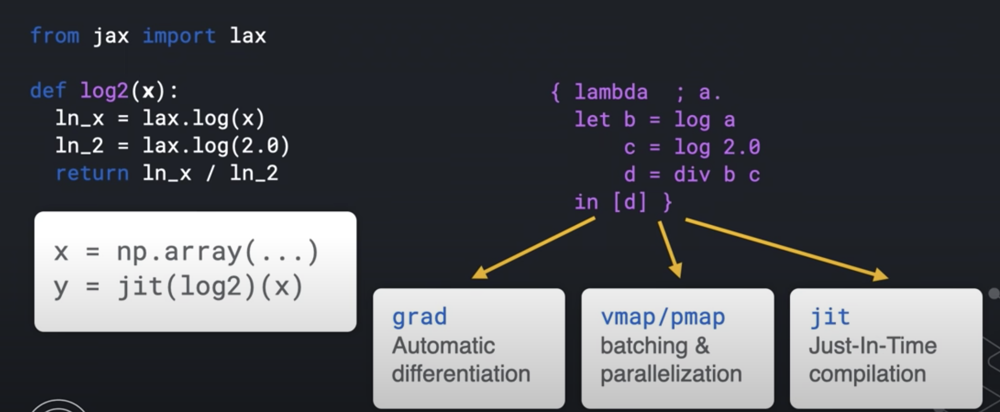

TF_CPP_MIN_LOG_LEVEL=0
import jax
import jax.numpy as jnp
global_list = []
def log2(x):
global_list.append(x)
ln_x = jnp.log(x)
ln_2 = jnp.log(2.0)
return ln_x / ln_2
print( jax.make_jaxpr(log2)(3.0) )
- Document
- Output
{ lambda ; a:f32[]. let
b:f32[] = log a
c:f32[] = log 2.0
d:f32[] = div b c
in (d,)
}
Jake on JAX
Closures and Decorators
Python Closures
Let us explain closure by an example:
# This is the outer enclosing function
def print_msg(msg):
def printer():
# This is the nested function
print(msg)
return printer # returns the nested function
# Now let's try calling this function.
another = print_msg("Hello")
another()
# Output: Hello
This technique by which some data in our case "Hello" gets attached to the code - another() is called closure in Python.
Three characteristics of a Python closure are:
- it is a nested function, in our example: printer()
- it has access to a free variable in outer scope, in our example: msg.
- it is returned from the enclosing function, in our example: print_msg()
``
# Python Decorators make an extensive use of closures
Python Decorators
A decorator takes in a function, adds some functionality and returns it.
# a decorator takes in a function, adds some functionality and returns it.
# takes in function to be decorated
def make_pretty(func):
def inner():
print("I got decorated") # getting decorated
func() # back to the given function
return inner
def ordinary():
print("I am ordinary")
# will print: I am ordinary
ordinary()
decorated = make_pretty(ordinary)
decorated()
""" will print:
I got decorated
I am ordinary
"""
# decorator function (make_pretty) has added
## some new functionality to the original function (ordinary)
# annoation way
@make_pretty # syntactic sugar
def ordinary():
print("I am ordinary")
iam_special = ordinary()
""" will print:
I got decorated
I am ordinary
"""
Decorating functions with parameters
# Decorating functions with parameters
def smart_divide(func):
def inner(a, b):
print("I am going to divide", a, "and", b)
if b == 0:
print("Whoops! cannot divide by zero")
return
return func(a, b)
return inner
@smart_divide
def divide(a, b):
print(a/b)
divide(10,2)
""" will print:
I am going to divide 10 and 2
5.0
"""
divide(10,0)
""" will print:
I am going to divide 10 and 0
Whoops! cannot divide by zero
"""
References
13. OpenAI
OpenAI API
Completion
curl https://api.openai.com/v1/engines/davinci/completions \
-H 'Content-Type: application/json' \
-H 'Authorization: Bearer YOUR_API_KEY \
-d '{
"prompt": "Once upon a time",
"max_tokens": 5
}'
- Result
{
"id": "cmpl-4DmYlIcNgBh26avH8t5mMMWwgILGE",
"object": "text_completion",
"created": 1639190275,
"model": "davinci:2020-05-03",
"choices": [
{
"text": ", there was a software",
"index": 0,
"logprobs": null,
"finish_reason": "length"
}
]
}
Search
curl https://api.openai.com/v1/engines/davinci/search \
-H "Content-Type: application/json" \
-H 'Authorization: Bearer YOUR_API_KEY' \
-d '{
"documents": ["White House", "hospital", "school"],
"query": "the president"
}'
{
"object": "list",
"data": [
{
"object": "search_result",
"document": 0,
"score": 215.56
},
{
"object": "search_result",
"document": 1,
"score": 55.614
},
{
"object": "search_result",
"document": 2,
"score": 40.932
}
],
"model": "davinci:2020-05-03"
}
Create Classification
curl https://api.openai.com/v1/classifications \
-X POST \
-H "Authorization: Bearer YOUR_API_KEY" \
-H 'Content-Type: application/json' \
-d '{
"examples": [
["A happy moment", "Positive"],
["I am sad.", "Negative"],
["I am feeling awesome", "Positive"]],
"query": "It is a raining day :(",
"search_model": "ada",
"model": "curie",
"labels":["Positive", "Negative", "Neutral"]
}'
{
"completion": "cmpl-4DmdStcV7tC6o5VJnoihr4TDFHse4",
"label": "Negative",
"model": "curie:2020-05-03",
"object": "classification",
"search_model": "ada",
"selected_examples": [
{
"document": 1,
"label": "Negative",
"text": "I am sad."
},
{
"document": 0,
"label": "Positive",
"text": "A happy moment"
},
{
"document": 2,
"label": "Positive",
"text": "I am feeling awesome"
}
]
}
Answers
curl https://api.openai.com/v1/answers \
-X POST \
-H "Authorization: Bearer YOUR_API_KEY" \
-H 'Content-Type: application/json' \
-d '{
"documents": ["Puppy A is happy.", "Puppy B is sad."],
"question": "which puppy is happy?",
"search_model": "ada",
"model": "curie",
"examples_context": "In 2017, U.S. life expectancy was 78.6 years.",
"examples": [["What is human life expectancy in the United States?","78 years."]],
"max_tokens": 5,
"stop": ["\n", "<|endoftext|>"]
}'
{
"answers": [
"puppy A."
],
"completion": "cmpl-4DmgSrZJ7sQx6lWRbaMyskSN68qCE",
"model": "curie:2020-05-03",
"object": "answer",
"search_model": "ada",
"selected_documents": [
{
"document": 0,
"text": "Puppy A is happy. "
},
{
"document": 1,
"text": "Puppy B is sad. "
}
]
}
List Files
curl https://api.openai.com/v1/files \
-H 'Authorization: Bearer YOUR_API_KEY'
{
"object": "list",
"data": []
}
Upload Files
curl https://api.openai.com/v1/files \
-H "Authorization: Bearer YOUR_API_KEY" \
-F purpose="answers" \
-F file='@puppy.jsonl'
Delete File
curl https://api.openai.com/v1/files/file-XjGxS3KTG0uNmNOK362iJua3 \
-X DELETE \
-H 'Authorization: Bearer YOUR_API_KEY'
Retrieve File Information
curl https://api.openai.com/v1/files/file-XjGxS3KTG0uNmNOK362iJua3 \
-H 'Authorization: Bearer YOUR_API_KEY'
Retrieve File Content
curl https://api.openai.com/v1/files/file-XjGxS3KTG0uNmNOK362iJua3/content \
-H 'Authorization: Bearer YOUR_API_KEY' > file.jsonl
Fine Tunes
- Manage fine-tuning jobs to tailor a model to your specific training data.
curl https://api.openai.com/v1/fine-tunes \
-X POST \
-H "Content-Type: application/json" \
-H "Authorization: Bearer YOUR_API_KEY" \
-d '{
"training_file": "file-XGinujblHPwGLSztz8cPS8XY"
}'
List fine-tunes
curl https://api.openai.com/v1/fine-tunes \
-H 'Authorization: Bearer YOUR_API_KEY'
List fine-tune information
curl https://api.openai.com/v1/fine-tunes/ftjob-AF1WoRqd3aJAHsqc9NY7iL8F \
-H "Authorization: Bearer YOUR_API_KEY"
Cancel a fine-tune
curl https://api.openai.com/v1/fine-tunes/ftjob-AF1WoRqd3aJAHsqc9NY7iL8F/cancel \
-X POST \
-H "Authorization: Bearer YOUR_API_KEY"
List fine-tune events
curl https://api.openai.com/v1/fine-tunes/ftjob-AF1WoRqd3aJAHsqc9NY7iL8F/events \
-H "Authorization: Bearer YOUR_API_KEY"
Embeddings
- Get a vector representation of a given input that can be easily consumed by machine learning models and algorithms.
curl https://api.openai.com/v1/engines/babbage-similarity/embeddings \
-X POST \
-H "Authorization: Bearer YOUR_API_KEY" \
-H "Content-Type: application/json" \
-d '{"input": "The food was delicious and the waiter..."}'
{
"object": "list",
"data": [
{
"object": "embedding",
"embedding": [
0.002866707742214203,
0.01886799931526184,
-0.03013569489121437,
-0.004034548997879028,
...
]
"index": 0
}
],
"model": "babbage-similarity-model:2021-09-20"
}
Chat

Summarize

TLDR
Translate

Translate

Codex
Demo: Javascript code writing with Codex
Videos
14. Inspirations
Chris Lattner
Chris Lattner talks about working with Steve Jobs, Elon Musk and Jeff Dean:
- Being OK with not knowing now
- Keys is not having right answer, but it is getting the right answer
- If you ask a lot of dumb questions you get smarter really quick
Chris is the main author of LLVM and related projects such as the Clang compiler and the Swift programming language
Jeff Dean
15. Datasets
Common Crawl
The Common Crawl corpus contains petabytes of data collected since 2008.
It contains raw web page data, extracted metadata and text extractions.
Example Projects
Boston Housing Dataset
import pandas as pd
url="https://raw.githubusercontent.com/mohan-chinnappan-n/ml-book-assets/master/BostonHousing.csv"
df = pd.read_csv(url)
df.head()


There are 14 attributes (features) in each case of the dataset. They are:
CRIM - per capita crime rate by town
ZN - proportion of residential land zoned for lots over 25,000 sq.ft.
INDUS - proportion of non-retail business acres per town.
CHAS - Charles River dummy variable (1 if tract bounds river; 0 otherwise)
NOX - nitric oxides concentration (parts per 10 million)
RM - average number of rooms per dwelling
AGE - proportion of owner-occupied units built prior to 1940
DIS - weighted distances to five Boston employment centres
RAD - index of accessibility to radial highways
TAX - full-value property-tax rate per $10,000
PTRATIO - pupil-teacher ratio by town
B - 1000(Bk - 0.63)^2 where Bk is the proportion of blacks by town
LSTAT - % lower status of the population
MEDV - Median value of owner-occupied homes in $1000's
16. Building ML for Industries
Lost-Found Item Management
Problem Description
Parcel delivery companies like UPS, FedEx needs a lost-and-found management solution:
There is possibility that item(s) packaged by the customers may fall out and becomes a candidate for the lost-and-found item
Solution
We can build a ML and Deep Learning based Image detection and comparison system.

How this works?
-
We have a database of the images which customers have reported that they have lost
-
At the storage and processing facility, we run those lost-and-found items on a conveyor
-
When the item reaches the Trigger point for scan image capture devices at Reader-L, Reader-R and Reader-T captures images at left, right and top. This may include bar-codes, UPC, QR-Code
-
These images are sent via WiFI to Image Collection, Composer and Processor (ICCP) device
-
ICCP makes use of Vision API and runs:
-
Image Detection of the composed image (composed out of 3 images received for this item)
-
Image Compare to compare images stored in the Customer cases
-
Stores these attributes
- ScannedImageUUID
- CustomerCaseImageUUID
- MatchScore
-
Based on the MatchScore we can detect/match the owner of this lost-and-found item
17.Hardware
Raspberry Pi
The Raspberry Pi is a small computer that can do lots of things.
You plug it into a monitor and attach a keyboard and mouse.
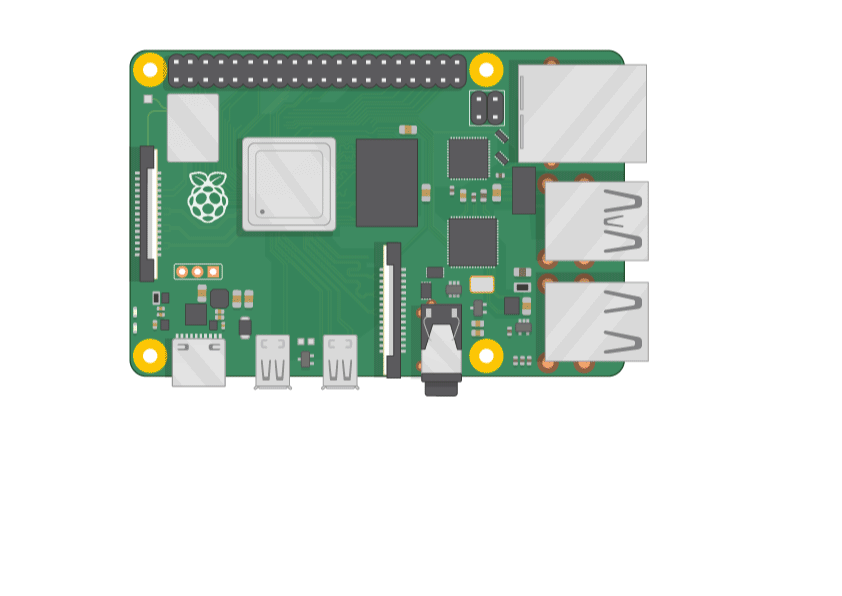

Tensorflow Lite on Pi
Raspberry PI emulation on macOS
# install info: https://github.com/faf0/macos-qemu-rpi
# https://joshondesign.com/2021/04/15/emu_pi_mac
pi@raspberrypi:~$ uname -a
Linux raspberrypi 5.4.51 #1 Sat Aug 8 23:28:32 +03 2020 armv6l GNU/Linux
pi@raspberrypi:~$
Resources
-
TensorFlow Lite
-
Cell phone
18. Conversational-AI
Teaching computers to communicate more like humans and not the other way around - Cathy Pearl - Google Conversation Design Outreach
There is no great writing, only great rewriting
-
Guide the user to the success by showing them the type of things they are going to be able to say in order for the system to respond.
-
Start with a sample dialog (like movie script) between the user and the system
-
Flesh out Ideas and make sure you are in the right direction
-
Iterate over this sample dialog to make it perfect
-
Do a table read
- someone play user role
- you play the system role
- find out the gaps and fix it
-
Prepare for:
- User will say things you did not expect
- In human-to-human conversation, we repair the conversations and move forward
- So repair things gracefully when user says you did not expect and get them back on track and keep going
User: I have issue a billing issue System: Provide current options available right now at this point in the conversation
- Rapid re-prompt
User: I like chocolate
System: You like Milk or Dark chocolate?
User: 65%
System: Sorry, it was Milk chocolate or Dark chocolate?
Do not say: I did not get that.
Be more specific and what was the system expecting at that time
and how the user can get back on track
References
-
Inclusive design is a design process (not restricted to interfaces or technologies) in which a mainstream product, service or environment is designed to be usable by as many people as reasonably possible, without the need for specialized adaptions.
-
Situational impairments
Videos
Chatbots
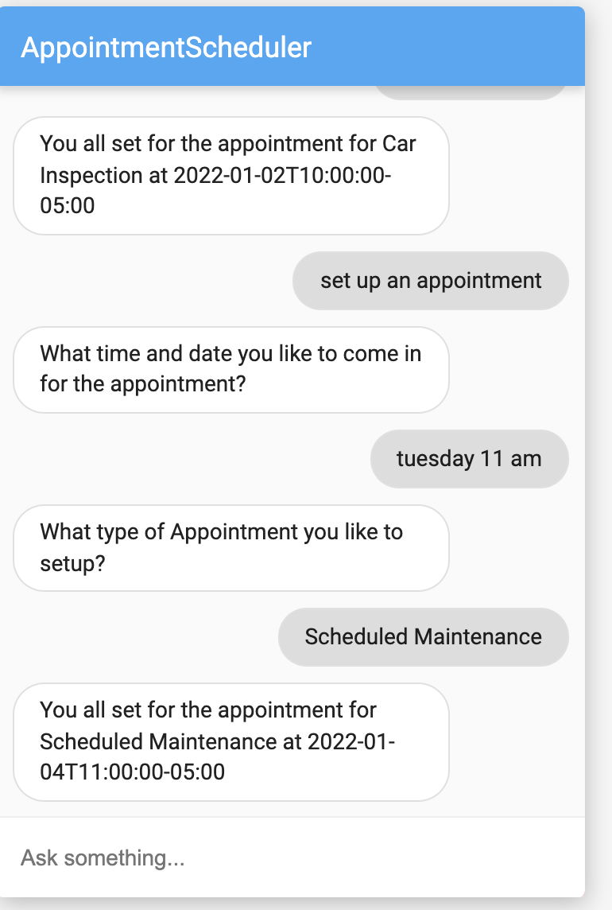
-
A chatbot is a conversational AI system that is able to communicate with a human in a natural language.
-
It can be integrated into websites, messaging platforms, and devices.
-
Companies can delegate routine tasks to a chatbot
- which will be able to process multiple user requests simultaneously
-
Chatbots are always available to assist the users and provide huge labor cost savings.
Two groups of chatbots
-
Rule Based
- Rely on predefined commands and templates.
- Each of these commands should be written by a chatbot developer using regular expressions and textual data analysis
-
Data-Driven
- Rely on machine learning (ML) models pre-trained on dialogue data.
Main parts of the chatbot
-
Natural Language Understanding (NLU)
- chatbot needs to understand utterances in a natural language
- NLU translates a user query from natural language into a labeled semantic representation.
- Example: The following in English:
What is the rental price in Boston?- will be translated into:
rent_price("Boston")
-
Then chatbot has to decide what is expected of it
-
Dialogue Manager (DM)
- keeps track of the dialogue state and decides what should be answered to the user.
-
Natural Language Generator (NLG)
- translates a semantic representation back into human language
- Example:
rent_price_in_USD("Boston") = 2500
- will be translated to:
The average rent price in Boston is around $2,500

Let us build a chatbot
The smallest building block of the library is Component. Component stands for any kind of function in an NLP pipeline. It can be implemented as:
- a neural network
- a non-neural ML model
- a rule-based system. Besides that, Component can have a nested structure, i.e. Component can include other Components.
Components can be joined into Skill.
- Skill solves a larger NLP task compared to Component. However, in terms of implementation Skills are not different from Components.
Agent is supposed to be a multi-purpose dialogue system that comprises several Skills and can switch between them. It can be a dialogue system that contains a goal-oriented and chatbot skills and chooses which one to use for generating the answer depending on an user input.
openAI Chat
References
- Einstein
- Google Contact Center AI
- DEEPPAVLOV
- RASA
Einstein Bots
Simple setup
Licenses required
-
Service Cloud
-
A Chat license
-
Enable Lightning Experience
-
Click the toggle on the Einstein Bots Setup page
-
Chat API Endpoint
https://d.la4-c1-ia4.salesforceliveagent.com/chat/rest/
-
Entities
- the bot to ask a question and then store the answer in a variable to use later. But first we need to set up an entity.
-
Variable
- A variable is a container that stores a specific piece of data collected from the customer.
Demo

Appointment Scheduler
Flow
flowchart TB
O[Appointment Menu] -->A[Schedule Appointment] --> B[What time you like to set up the appointment?]
O -->Z[Transfer To Agent]
B --> C{Get Appointment Date and Time}
C --> D[What type of appointment?]
D --> E{Get Appointment Type}
E --> F[What type of car you have?]
F --> G{Get Car Type}
G --> H[You are all set for your appointment \non ApptDateTime \nfor appointmentType for your car Car_Type]
Proposed Bot Def
name: Kovai
ver: 1.0.0
description: Bot able to provide appointment management and take actions at the CRM system
menus:
mainMenu:
- Appointment Booking
- Transfer to an Agent
AppointMenu:
- question: What time and date you like to book the appointment?
answer:
- Tomorrow 10 am
- Tuesday 11 am
- Next week Wednesday 12 noon
entities:
type: sys.DateTime
name: $AppointmentDateTime
- question: What type of appointment type you need?
menu:
- Car Inspection
- Car Maintenance
entities:
type: String
name: $AppointmentType
- question: What type of car you have?
menu:
- Ford F-150
- Ford Explorer
- Toyota Camry
- Toyota Corolla
entities:
type: String
name :$CarType
- response: |-
You are all set with your appointment on $AppointmentDateTime
for $AppointmentType for your $CarType

Setup

Demo
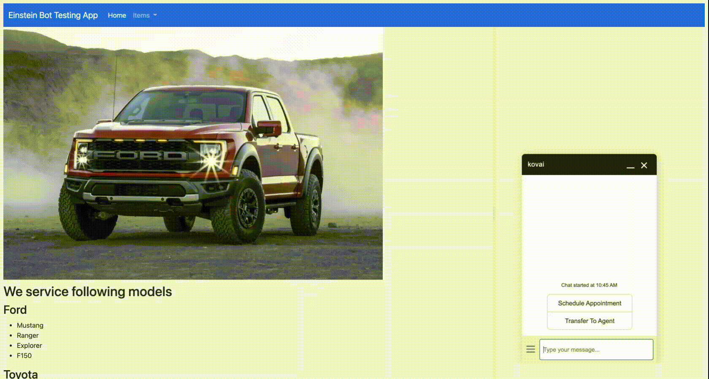
Channels supported
Einstein Bots support the following channels:
- Chat (In-App and Web)
- Messaging
- SMS
- Facebook Messenger
- WhatsApp channels
Bot metadata
sfdx mohanc:mdapi:list -u mohan.chinnappan.n_ea2@gmail.com -t Bot
{
result: [
{
createdById: '0053h000002xQ5sAAE',
createdByName: 'Mohan Chinnappan',
createdDate: 2021-06-03T01:01:58.000Z,
fileName: 'bots/kovai.bot',
fullName: 'kovai',
id: '0Xx3h000000H4T0CAK',
lastModifiedById: '0053h000002xQ5sAAE',
lastModifiedByName: 'Mohan Chinnappan',
lastModifiedDate: 2021-06-03T01:01:58.000Z,
type: 'Bot'
}
]
}
sfdx mohanc:mdapi:retrieve -u mohan.chinnappan.n_ea2@gmail.com -t Bot
{
"RetrieveRequest": {
"apiVersion": "53.0",
"unpackaged": [
{
"types": {
"members": "*",
"name": "Bot"
}
}
]
}
}
{ result: { done: false, id: '09S3h000005rNsXEAU', state: 'Queued' } }
sfdx mohanc:mdapi:checkRetrieveStatus -u mohan.chinnappan.n_ea2@gmail.com -i 09S3h000005rNsXEAU
[
{
createdById: '0053h000002xQ5sAAE',
createdByName: 'Mohan Chinnappan',
createdDate: 2021-06-03T01:01:58.000Z,
fileName: 'unpackaged/bots/kovai.bot',
fullName: 'kovai',
id: '0Xx3h000000H4T0CAK',
lastModifiedById: '0053h000002xQ5sAAE',
lastModifiedByName: 'Mohan Chinnappan',
lastModifiedDate: 2021-06-03T01:01:58.000Z,
type: 'Bot'
},
{
createdById: '0053h000002xQ5sAAE',
createdByName: 'Mohan Chinnappan',
createdDate: 2022-01-03T20:43:32.647Z,
fileName: 'unpackaged/package.xml',
fullName: 'unpackaged/package.xml',
id: '',
lastModifiedById: '0053h000002xQ5sAAE',
lastModifiedByName: 'Mohan Chinnappan',
lastModifiedDate: 2022-01-03T20:43:32.647Z,
manageableState: 'unmanaged',
type: 'Package'
}
]
=== Writing zipFile base64 content to 09S3h000005rNsXEAU.zip.txt ...
=== Writing zipFile binary content to 09S3h000005rNsXEAU.zip ...
unzip 09S3h000005rNsXEAU.zip
Archive: 09S3h000005rNsXEAU.zip
inflating: unpackaged/bots/kovai.bot
inflating: unpackaged/package.xml
├── 09S3h000005rNsXEAU.zip
├── 09S3h000005rNsXEAU.zip.txt
└── unpackaged
├── bots
│ └── kovai.bot
└── package.xml
cat unpackaged/bots/kovai.bot
<?xml version="1.0" encoding="UTF-8"?>
<Bot xmlns="http://soap.sforce.com/2006/04/metadata">
<botMlDomain>
<label>kovai</label>
<mlIntents>
<developerName>Confused</developerName>
<label>Confused</label>
</mlIntents>
<mlIntents>
<developerName>Transfer_To_Agent</developerName>
<label>Transfer To Agent</label>
</mlIntents>
<mlSlotClasses>
<dataType>Text</dataType>
<developerName>appointment_type</developerName>
<extractionRegex>.*</extractionRegex>
<extractionType>Pattern</extractionType>
<label>appointment type</label>
</mlSlotClasses>
<mlSlotClasses>
<dataType>Text</dataType>
<developerName>Car_Type</developerName>
<extractionRegex>.*</extractionRegex>
<extractionType>Pattern</extractionType>
<label>Car Type</label>
</mlSlotClasses>
<mlSlotClasses>
<dataType>Text</dataType>
<description>Memory size</description>
<developerName>Memory_size</developerName>
<extractionRegex>[1-9][0-9]*</extractionRegex>
<extractionType>Pattern</extractionType>
<label>Memory size</label>
</mlSlotClasses>
<name>kovai</name>
</botMlDomain>
<botVersions>
<fullName>v1</fullName>
<botDialogs>
<botSteps>
<conversationRecordLookup>
<SObjectType>Contact</SObjectType>
<conditions>
<leftOperand>Contact.LastName</leftOperand>
<operatorType>Contains</operatorType>
<rightOperandName>LastName</rightOperandName>
<rightOperandType>ConversationVariable</rightOperandType>
<sortOrder>1</sortOrder>
</conditions>
<filterLogic>And</filterLogic>
<lookupFields>
<fieldName>Contact.Birthdate</fieldName>
</lookupFields>
<maxLookupResults>3</maxLookupResults>
<targetVariableName>ListVar</targetVariableName>
</conversationRecordLookup>
<stepIdentifier>33b7e5b2-e600-449d-ad6c-977980f017fd</stepIdentifier>
<type>RecordLookup</type>
</botSteps>
<botSteps>
<stepIdentifier>7bee15be-3454-49a9-a954-da9ec6d8ca1e</stepIdentifier>
<type>Wait</type>
</botSteps>
<developerName>Check_My_Order</developerName>
<label>Find Birth Date</label>
<showInFooterMenu>false</showInFooterMenu>
</botDialogs>
<botDialogs>
<botSteps>
<botMessages>
<message>We will fix it soon!</message>
<messageIdentifier>9f7211b0-141a-4ac8-a15a-da405e3df903</messageIdentifier>
</botMessages>
<stepIdentifier>bc4b5ba5-d5d7-4e49-a3ea-e181d6b98aa8</stepIdentifier>
<type>Message</type>
</botSteps>
<botSteps>
<stepIdentifier>6d4435bf-c2cb-4dda-a0f9-9915213e766e</stepIdentifier>
<type>Wait</type>
</botSteps>
<developerName>Printer_not_working</developerName>
<label>Printer not working</label>
<showInFooterMenu>false</showInFooterMenu>
</botDialogs>
<botDialogs>
<botSteps>
<botVariableOperation>
<askCollectIfSet>false</askCollectIfSet>
<botMessages>
<message>How much memory</message>
<messageIdentifier>ad3b8a35-52b2-4dda-b19d-d427c121bc21</messageIdentifier>
</botMessages>
<botQuickReplyOptions>
<literalValue>6 GB</literalValue>
<quickReplyOptionIdentifier>be9aba98-d1ad-43a8-8919-8ff93dcc653a</quickReplyOptionIdentifier>
</botQuickReplyOptions>
<botQuickReplyOptions>
<literalValue>12 GB</literalValue>
<quickReplyOptionIdentifier>09772c46-ac87-4606-8dfc-6151be0f7392</quickReplyOptionIdentifier>
</botQuickReplyOptions>
<botQuickReplyOptions>
<literalValue>16 GB</literalValue>
<quickReplyOptionIdentifier>763e8f95-937d-4d6a-b293-b5efdbcd6e39</quickReplyOptionIdentifier>
</botQuickReplyOptions>
<botQuickReplyOptions>
<literalValue>32 GB</literalValue>
<quickReplyOptionIdentifier>f6155fa2-9a94-4062-a58f-3480bb49dd64</quickReplyOptionIdentifier>
</botQuickReplyOptions>
<botVariableOperands>
<disableAutoFill>false</disableAutoFill>
<sourceName>Memory_size</sourceName>
<sourceType>MlSlotClass</sourceType>
<targetName>Memory_Size</targetName>
<targetType>ConversationVariable</targetType>
</botVariableOperands>
<optionalCollect>false</optionalCollect>
<quickReplyType>Static</quickReplyType>
<quickReplyWidgetType>Buttons</quickReplyWidgetType>
<retryMessages>
<message>Please provide memory size in GB</message>
<messageIdentifier>cde1f4ca-5d67-4792-ac54-a6ae49ff7f99</messageIdentifier>
</retryMessages>
<type>Collect</type>
<variableOperationIdentifier>4c5b98ee-95ac-4d5d-9700-95cfa31c269e</variableOperationIdentifier>
</botVariableOperation>
<stepIdentifier>3bb7b606-69ec-4d2c-9616-8bb1419efc5a</stepIdentifier>
<type>VariableOperation</type>
</botSteps>
<botSteps>
<conversationSystemMessage>
<type>Transfer</type>
</conversationSystemMessage>
<stepIdentifier>b299f386-1ff0-4f00-8530-7baf68a7b059</stepIdentifier>
<type>SystemMessage</type>
</botSteps>
<developerName>Find_a_MacBook_Pro</developerName>
<label>Find a MacBook Pro</label>
<showInFooterMenu>false</showInFooterMenu>
</botDialogs>
<botDialogs>
<botSteps>
<botMessages>
<message>Hi, I’m 'kovai', your digital assistant.</message>
<messageIdentifier>2426b915-4efd-426d-be46-c45713d7ed44</messageIdentifier>
</botMessages>
<stepIdentifier>c419550f-92e8-47d4-a127-9f0aaf0507df</stepIdentifier>
<type>Message</type>
</botSteps>
<botSteps>
<botMessages>
<message>Let me offer you options</message>
<messageIdentifier>6b789c42-4d45-4b96-84ab-2971cfcf68a8</messageIdentifier>
</botMessages>
<stepIdentifier>ce9bfdd6-7993-48fd-abf4-f87b3d7efcf7</stepIdentifier>
<type>Message</type>
</botSteps>
<botSteps>
<botNavigation>
<botNavigationLinks>
<targetBotDialog>Main_Menu</targetBotDialog>
</botNavigationLinks>
<type>Redirect</type>
</botNavigation>
<stepIdentifier>85da64be-da77-4965-b978-2fa8488d758b</stepIdentifier>
<type>Navigation</type>
</botSteps>
<developerName>Welcome</developerName>
<label>Welcome</label>
<showInFooterMenu>false</showInFooterMenu>
</botDialogs>
<botDialogs>
<botSteps>
<botNavigation>
<botNavigationLinks>
<label>Check My Order</label>
<targetBotDialog>Check_My_Order</targetBotDialog>
</botNavigationLinks>
<botNavigationLinks>
<label>Printer not working</label>
<targetBotDialog>Printer_not_working</targetBotDialog>
</botNavigationLinks>
<botNavigationLinks>
<label>Find a MacBook Pro</label>
<targetBotDialog>Find_a_MacBook_Pro</targetBotDialog>
</botNavigationLinks>
<type>Redirect</type>
</botNavigation>
<stepIdentifier>3d40fef7-a514-4c68-957b-ba2f3f9f0776</stepIdentifier>
<type>Navigation</type>
</botSteps>
<developerName>Main_Menu</developerName>
<label>Main Menu</label>
<showInFooterMenu>true</showInFooterMenu>
</botDialogs>
<botDialogs>
<botSteps>
<botMessages>
<message>Transferring to the Agent</message>
<messageIdentifier>c76163dc-a4f3-47f5-890e-17de71f73006</messageIdentifier>
</botMessages>
<stepIdentifier>31b86047-f3e8-4eb5-9595-e41d45588cf5</stepIdentifier>
<type>Message</type>
</botSteps>
<botSteps>
<conversationSystemMessage>
<type>Transfer</type>
</conversationSystemMessage>
<stepIdentifier>17a17172-c762-427d-ab07-ec23001781c6</stepIdentifier>
<type>SystemMessage</type>
</botSteps>
<developerName>Transfer_To_Agent</developerName>
<label>Transfer To Agent</label>
<mlIntent>Transfer_To_Agent</mlIntent>
<mlIntentTrainingEnabled>false</mlIntentTrainingEnabled>
<showInFooterMenu>true</showInFooterMenu>
</botDialogs>
<botDialogs>
<botSteps>
<botMessages>
<message>Goodbye! Click the "End Chat" button to end this chat</message>
<messageIdentifier>c11e71d1-bdcf-45c6-a8e4-cc7c5b97d134</messageIdentifier>
</botMessages>
<stepIdentifier>1c06aad9-d63c-4e47-88e4-58f3af6b858e</stepIdentifier>
<type>Message</type>
</botSteps>
<botSteps>
<stepIdentifier>fd33a42e-c466-4f9e-8c5e-ad53c3bdf81a</stepIdentifier>
<type>Wait</type>
</botSteps>
<developerName>End_Chat</developerName>
<label>End Chat</label>
<showInFooterMenu>false</showInFooterMenu>
</botDialogs>
<botDialogs>
<botSteps>
<botMessages>
<message>Sorry, I didn't understand the your request</message>
<messageIdentifier>653aa7c9-d205-4a52-96b8-543efd760d96</messageIdentifier>
</botMessages>
<stepIdentifier>26067502-7f1d-4bed-803f-43ca26c0ba63</stepIdentifier>
<type>Message</type>
</botSteps>
<botSteps>
<stepIdentifier>51dab797-c78f-41d0-a7b8-c30497a11446</stepIdentifier>
<type>Wait</type>
</botSteps>
<developerName>Confused</developerName>
<label>Confused</label>
<mlIntent>Confused</mlIntent>
<mlIntentTrainingEnabled>false</mlIntentTrainingEnabled>
<showInFooterMenu>false</showInFooterMenu>
</botDialogs>
<botDialogs>
<botSteps>
<botMessages>
<message>Unfortunately, there are no agents available at the moment</message>
<messageIdentifier>8813055e-c518-4dbe-b430-ae02c76e6bf0</messageIdentifier>
</botMessages>
<stepIdentifier>4cd74b3f-7fa5-466b-89f5-a37be3ee8794</stepIdentifier>
<type>Message</type>
</botSteps>
<botSteps>
<stepIdentifier>e15e7024-72e0-4656-a05e-15e0906bec8e</stepIdentifier>
<type>Wait</type>
</botSteps>
<developerName>No_Agent_Available</developerName>
<label>No Agent</label>
<showInFooterMenu>false</showInFooterMenu>
</botDialogs>
<botDialogs>
<botSteps>
<botMessages>
<message>Unfortunately, a system error occurred. I'll connect you to an agent who can help.</message>
<messageIdentifier>6bff781a-27bd-4fd3-9a5e-545d54313bd0</messageIdentifier>
</botMessages>
<stepIdentifier>390b8657-1e1d-4d5d-af4f-1ca00ca093db</stepIdentifier>
<type>Message</type>
</botSteps>
<botSteps>
<conversationSystemMessage>
<type>Transfer</type>
</conversationSystemMessage>
<stepIdentifier>2cd2ecb8-e5d6-490a-a329-8fdd62e5e3ec</stepIdentifier>
<type>SystemMessage</type>
</botSteps>
<developerName>Error_Handling</developerName>
<label>Error Handler</label>
<showInFooterMenu>false</showInFooterMenu>
</botDialogs>
<botDialogs>
<botSteps>
<botVariableOperation>
<askCollectIfSet>false</askCollectIfSet>
<botMessages>
<message>What time you like to set up the appointment?</message>
<messageIdentifier>db1c8f72-5d22-e3ac-d940-a9f7cebc43da</messageIdentifier>
</botMessages>
<botVariableOperands>
<disableAutoFill>false</disableAutoFill>
<sourceName>_DateTime</sourceName>
<sourceType>StandardMlSlotClass</sourceType>
<targetName>ApptDateTime</targetName>
<targetType>ConversationVariable</targetType>
</botVariableOperands>
<optionalCollect>false</optionalCollect>
<quickReplyWidgetType>Buttons</quickReplyWidgetType>
<type>Collect</type>
<variableOperationIdentifier>e23fa3b7-c854-1169-4ec7-030cb091a885</variableOperationIdentifier>
</botVariableOperation>
<stepIdentifier>b1196beb-46f1-4dcc-b4aa-7486ae4cfd17</stepIdentifier>
<type>VariableOperation</type>
</botSteps>
<botSteps>
<botNavigation>
<botNavigationLinks>
<targetBotDialog>Ask_for_appointment_type</targetBotDialog>
</botNavigationLinks>
<type>Redirect</type>
</botNavigation>
<stepIdentifier>3493f124-9a0d-4ac5-965b-d2cccdff72b1</stepIdentifier>
<type>Navigation</type>
</botSteps>
<developerName>Schedule_Appointment</developerName>
<label>Schedule Appointment</label>
<showInFooterMenu>true</showInFooterMenu>
</botDialogs>
<botDialogs>
<botSteps>
<botVariableOperation>
<askCollectIfSet>false</askCollectIfSet>
<botMessages>
<message>What type of appointment</message>
<messageIdentifier>4bb7bab9-7ffb-6834-58d4-95fe42586d2d</messageIdentifier>
</botMessages>
<botQuickReplyOptions>
<literalValue>Car Inspection</literalValue>
<quickReplyOptionIdentifier>01fca43c-4167-8ce0-4064-ea6014f6d1e4</quickReplyOptionIdentifier>
</botQuickReplyOptions>
<botQuickReplyOptions>
<literalValue>Car Maintenance</literalValue>
<quickReplyOptionIdentifier>95203cce-8c74-11ad-04e9-3a7dfed1f24f</quickReplyOptionIdentifier>
</botQuickReplyOptions>
<botVariableOperands>
<disableAutoFill>true</disableAutoFill>
<sourceName>appointment_type</sourceName>
<sourceType>MlSlotClass</sourceType>
<targetName>appointmentType</targetName>
<targetType>ConversationVariable</targetType>
</botVariableOperands>
<optionalCollect>false</optionalCollect>
<quickReplyType>Static</quickReplyType>
<quickReplyWidgetType>Buttons</quickReplyWidgetType>
<type>Collect</type>
<variableOperationIdentifier>dcba7bf3-682d-6529-5dc3-20edebeaaf35</variableOperationIdentifier>
</botVariableOperation>
<stepIdentifier>7d685414-e474-4bb2-8d9f-0aa9ea3424ea</stepIdentifier>
<type>VariableOperation</type>
</botSteps>
<botSteps>
<botNavigation>
<botNavigationLinks>
<targetBotDialog>Ask_for_car_type</targetBotDialog>
</botNavigationLinks>
<type>Redirect</type>
</botNavigation>
<stepIdentifier>d2c2c402-d027-47ef-b281-30f705cc2977</stepIdentifier>
<type>Navigation</type>
</botSteps>
<developerName>Ask_for_appointment_type</developerName>
<label>Ask for appointment type</label>
<showInFooterMenu>false</showInFooterMenu>
</botDialogs>
<botDialogs>
<botSteps>
<botMessages>
<message>You are all set for your appointment on {!ApptDateTime} for {!appointmentType} for your car {!Car_Type}</message>
<messageIdentifier>118272b0-83ad-e8d8-0de0-92daa0ec9fc9</messageIdentifier>
</botMessages>
<stepIdentifier>141c3b77-466e-4f34-b347-f3a5805e7350</stepIdentifier>
<type>Message</type>
</botSteps>
<botSteps>
<stepIdentifier>947d7297-6c8a-4e5b-a8a5-44d7a847d316</stepIdentifier>
<type>Wait</type>
</botSteps>
<developerName>Confirm_appointment</developerName>
<label>Confirm appointment</label>
<showInFooterMenu>false</showInFooterMenu>
</botDialogs>
<botDialogs>
<botSteps>
<botNavigation>
<botNavigationLinks>
<targetBotDialog>Schedule_Appointment</targetBotDialog>
</botNavigationLinks>
<botNavigationLinks>
<targetBotDialog>Transfer_To_Agent</targetBotDialog>
</botNavigationLinks>
<type>Redirect</type>
</botNavigation>
<stepIdentifier>dbb09296-4a74-4618-8373-1379fc37041d</stepIdentifier>
<type>Navigation</type>
</botSteps>
<developerName>Appointment_Menu</developerName>
<label>Appointment Menu</label>
<showInFooterMenu>true</showInFooterMenu>
</botDialogs>
<botDialogs>
<botSteps>
<botVariableOperation>
<askCollectIfSet>false</askCollectIfSet>
<botMessages>
<message>What type of car you have?</message>
<messageIdentifier>d3eb1be4-a229-eb2f-9f53-17970b8fbd11</messageIdentifier>
</botMessages>
<botQuickReplyOptions>
<literalValue>Toyota: Camry</literalValue>
<quickReplyOptionIdentifier>09a8d86c-d225-c99b-148b-e0cd9604c334</quickReplyOptionIdentifier>
</botQuickReplyOptions>
<botQuickReplyOptions>
<literalValue>Toyota: 4Runner</literalValue>
<quickReplyOptionIdentifier>d8a40b69-c712-c35d-853d-beeeca9f08ed</quickReplyOptionIdentifier>
</botQuickReplyOptions>
<botQuickReplyOptions>
<literalValue>Ford: Mustang</literalValue>
<quickReplyOptionIdentifier>82d97836-9857-0db5-af32-708cbb114586</quickReplyOptionIdentifier>
</botQuickReplyOptions>
<botQuickReplyOptions>
<literalValue>Ford: Ranger</literalValue>
<quickReplyOptionIdentifier>f9b16e07-fedb-dd27-e2e0-66c5cd7ea5b8</quickReplyOptionIdentifier>
</botQuickReplyOptions>
<botQuickReplyOptions>
<literalValue>Ford: Explorer</literalValue>
<quickReplyOptionIdentifier>f2c96527-1dfa-0e7a-a711-8503d04c53b8</quickReplyOptionIdentifier>
</botQuickReplyOptions>
<botQuickReplyOptions>
<literalValue>Ford: F150</literalValue>
<quickReplyOptionIdentifier>7c54b29f-7428-d1c1-e667-6480a74a5702</quickReplyOptionIdentifier>
</botQuickReplyOptions>
<botVariableOperands>
<disableAutoFill>true</disableAutoFill>
<sourceName>Car_Type</sourceName>
<sourceType>MlSlotClass</sourceType>
<targetName>Car_Type</targetName>
<targetType>ConversationVariable</targetType>
</botVariableOperands>
<optionalCollect>false</optionalCollect>
<quickReplyType>Static</quickReplyType>
<quickReplyWidgetType>Buttons</quickReplyWidgetType>
<type>Collect</type>
<variableOperationIdentifier>638af6ae-9405-6a15-c328-79e4cf4cd31e</variableOperationIdentifier>
</botVariableOperation>
<stepIdentifier>01542a2a-61d4-49cc-962b-0ac52767dae4</stepIdentifier>
<type>VariableOperation</type>
</botSteps>
<botSteps>
<botNavigation>
<botNavigationLinks>
<targetBotDialog>Confirm_appointment</targetBotDialog>
</botNavigationLinks>
<type>Redirect</type>
</botNavigation>
<stepIdentifier>98bedd87-e0e3-4b71-8f57-81a79db90dea</stepIdentifier>
<type>Navigation</type>
</botSteps>
<developerName>Ask_for_car_type</developerName>
<label>Ask for car type</label>
<showInFooterMenu>false</showInFooterMenu>
</botDialogs>
<conversationSystemDialogs>
<dialog>Error_Handling</dialog>
<type>ErrorHandling</type>
</conversationSystemDialogs>
<conversationSystemDialogs>
<dialog>No_Agent_Available</dialog>
<type>TransferFailed</type>
</conversationSystemDialogs>
<conversationVariables>
<dataType>Text</dataType>
<developerName>appointmentType</developerName>
<label>appointmentType</label>
</conversationVariables>
<conversationVariables>
<dataType>DateTime</dataType>
<developerName>ApptDateTime</developerName>
<label>ApptDateTime</label>
</conversationVariables>
<conversationVariables>
<dataType>Text</dataType>
<developerName>Car_Type</developerName>
<label>Car Type</label>
</conversationVariables>
<conversationVariables>
<dataType>Text</dataType>
<developerName>LastName</developerName>
<label>LastName</label>
</conversationVariables>
<conversationVariables>
<collectionType>List</collectionType>
<dataType>Object</dataType>
<developerName>ListVar</developerName>
<label>ListVar</label>
</conversationVariables>
<conversationVariables>
<dataType>Text</dataType>
<developerName>Memory_Size</developerName>
<label>Memory Size</label>
</conversationVariables>
<entryDialog>Appointment_Menu</entryDialog>
<mainMenuDialog>Schedule_Appointment</mainMenuDialog>
<nlpProviders>
<language>en_US</language>
<nlpProviderType>EinsteinAi</nlpProviderType>
</nlpProviders>
</botVersions>
<contextVariables>
<contextVariableMappings>
<SObjectType>LiveChatTranscript</SObjectType>
<fieldName>LiveChatTranscript.ChatKey</fieldName>
<messageType>WebChat</messageType>
</contextVariableMappings>
<dataType>Text</dataType>
<developerName>ChatKey</developerName>
<label>Chat Key</label>
</contextVariables>
<contextVariables>
<contextVariableMappings>
<SObjectType>LiveChatTranscript</SObjectType>
<fieldName>LiveChatTranscript.ContactId</fieldName>
<messageType>WebChat</messageType>
</contextVariableMappings>
<dataType>Id</dataType>
<developerName>ContactId</developerName>
<label>Contact Id</label>
</contextVariables>
<contextVariables>
<contextVariableMappings>
<SObjectType>LiveChatTranscript</SObjectType>
<fieldName>LiveChatTranscript.LiveChatVisitorId</fieldName>
<messageType>WebChat</messageType>
</contextVariableMappings>
<dataType>Id</dataType>
<developerName>EndUserId</developerName>
<label>End User Id</label>
</contextVariables>
<contextVariables>
<contextVariableMappings>
<SObjectType>LiveChatTranscript</SObjectType>
<fieldName>LiveChatTranscript.Id</fieldName>
<messageType>WebChat</messageType>
</contextVariableMappings>
<dataType>Id</dataType>
<developerName>RoutableId</developerName>
<label>Routable Id</label>
</contextVariables>
<conversationChannelProviders>
<agentRequired>false</agentRequired>
<chatButtonName>botQueueGroup</chatButtonName>
</conversationChannelProviders>
<description>A bot from scratch.</description>
<label>kovai</label>
<logPrivateConversationData>false</logPrivateConversationData>
<richContentEnabled>false</richContentEnabled>
</Bot>
References
DeepPavlov
-
DeepPavlov is an open source framework for
- chatbots and virtual assistants development
-
DeepPavlov has comprehensive and flexible tools that let developers and NLP researchers:
-
create production ready conversational skills
-
complex multi-skill conversational assistants
-
Developed on top of the open source machine learning frameworks TensorFlow and Keras.
-
Training the bot
- Installing
!pip install deeppavlov
!python -m deeppavlov install gobot_dstc2_minimal
- A policy module of the bot decides what action should be taken in the current dialogue state.
- The policy in our bot is implemented as a recurrent neural network (recurrency over user utterances) followed by a dense layer with softmax function on top.

Training data
[
[
{
"speaker": 1,
"text": "hi"
},
{
"speaker": 2,
"text": "Hello, what is the weather today?",
"act": "welcome_msg"
},
{
"speaker": 1,
"text": "Quite sunny outside"
},
{
"speaker": 2,
"text": "Then you should cycle!",
"act": "suggest_cycling"
},
{
"speaker": 1,
"text": "Thanks! Great idea"
},
{
"speaker": 2,
"text": "You are welcome! Bye!",
"act": "good_bye"
}
],
[
{
"speaker": 1,
"text": "hey, bot"
},
{
"speaker": 2,
"text": "Hello, what is the weather today?",
"act": "welcome_msg"
},
{
"speaker": 1,
"text": "raining a lot"
},
{
"speaker": 2,
"text": "Then you should try hot chinese tea!",
"act": "suggest_tea"
},
{
"speaker": 1,
"text": "nice. thank you"
},
{
"speaker": 2,
"text": "You are welcome! Bye!",
"act": "good_bye"
}
],
[
{
"speaker": 1,
"text": "good morning you!"
},
{
"speaker": 2,
"text": "Hello, what is the weather today?",
"act": "welcome_msg"
},
{
"speaker": 1,
"text": "hot and a little bit cloudy i guess"
},
{
"speaker": 2,
"text": "Then you should cycle!",
"act": "suggest_cycling"
},
{
"speaker": 1,
"text": "no, i dont have a bike"
},
{
"speaker": 2,
"text": "That's a pity! Next time maybe. Have a good day!",
"act": "bad_bye"
}
],
[
{
"speaker": 1,
"text": "hello beautiful!"
},
{
"speaker": 2,
"text": "Hello, what is the weather today?",
"act": "welcome_msg"
},
{
"speaker": 1,
"text": "too much snow, dont want to go out"
},
{
"speaker": 2,
"text": "Then you should try hot chinese tea!",
"act": "suggest_tea"
},
{
"speaker": 1,
"text": "no i am not into tea"
},
{
"speaker": 2,
"text": "That's a pity! Next time maybe. Have a good day!",
"act": "bad_bye"
}
],
[
{
"speaker": 1,
"text": "good evening"
},
{
"speaker": 2,
"text": "Hello, what is the weather today?",
"act": "welcome_msg"
},
{
"speaker": 1,
"text": "mainly cloudy and gray"
},
{
"speaker": 2,
"text": "Then you should try hot chinese tea!",
"act": "suggest_tea"
},
{
"speaker": 1,
"text": "that sounds good"
},
{
"speaker": 2,
"text": "You are welcome! Bye!",
"act": "good_bye"
}
],
[
{
"speaker": 1,
"text": "hey"
},
{
"speaker": 2,
"text": "Hello, what is the weather today?",
"act": "welcome_msg"
},
{
"speaker": 1,
"text": "very dark and murky"
},
{
"speaker": 2,
"text": "Then you should try hot chinese tea!",
"act": "suggest_tea"
},
{
"speaker": 1,
"text": "tea is not funny"
},
{
"speaker": 2,
"text": "That's a pity! Next time maybe. Have a good day!",
"act": "bad_bye"
}
],
[
{
"speaker": 1,
"text": "how you doing"
},
{
"speaker": 2,
"text": "Hello, what is the weather today?",
"act": "welcome_msg"
},
{
"speaker": 1,
"text": "the weather is gorgeous!"
},
{
"speaker": 2,
"text": "Then you should cycle!",
"act": "suggest_cycling"
},
{
"speaker": 1,
"text": "maybe you are right, i'll try that"
},
{
"speaker": 2,
"text": "You are welcome! Bye!",
"act": "good_bye"
}
],
[
{
"speaker": 1,
"text": "hii"
},
{
"speaker": 2,
"text": "Hello, what is the weather today?",
"act": "welcome_msg"
},
{
"speaker": 1,
"text": "nice weather really"
},
{
"speaker": 2,
"text": "Then you should cycle!",
"act": "suggest_cycling"
},
{
"speaker": 1,
"text": "i dont wanna do such stuff"
},
{
"speaker": 2,
"text": "That's a pity! Next time maybe. Have a good day!",
"act": "bad_bye"
}
]
]

| action | system response |
|---|---|
| welcome_msg | Hello, what is the weather today? |
| suggest_tea | Then you should try hot chinese tea! |
| suggest_cycling | Then you should cycle! |
| good_bye | You are welcome! Bye! |
| bad_bye | That's a pity! Next time maybe. Have a good day! |

Training the model
from deeppavlov import train_model
gobot_config['train']['batch_size'] = 4 # set batch size
gobot_config['train']['max_batches'] = 30 # maximum number of training batches
gobot_config['train']['val_every_n_batches'] = 30 # evaluate on full 'valid' split every 30 epochs
gobot_config['train']['log_every_n_batches'] = 5 # evaluate on full 'train' split every 5 batches
train_model(gobot_config)
Building the model
from deeppavlov import build_model
bot = build_model(gobot_config
Interacting with the bot
bot([[{"text": "good evening, bot"}]])
- response
[['Hello, what is the weather today?']]
bot([[{"text": "the weather is clooudy and gloooomy"}]])
- response
[['Then you should cycle!']]
Resetting the bot
bot.reset()

References
- DEEPPAVLOV
- How to build ‘Hello World!’ bot with DeepPavlov in 4 steps
- GloVe - Global Vectors for Word Representation
Dialogflow
Trying to teach a machine to have conversion is not easy!
User will ask same thing in a different ways!
| User Ask |
|---|
| What is the forecast tomorrow? |
| What is the weather tomorrow? |
| What is the weather tomorrow in Boston? |
Rule based systems to handle this not manageable! We need Natural Language Understanding (NLU)
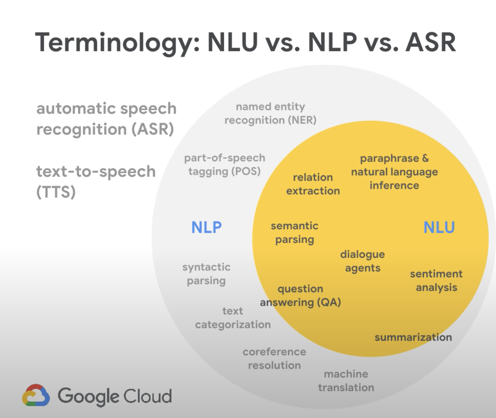
- NLU works for both voice and text and with help of ML we can make chatbots really useful! 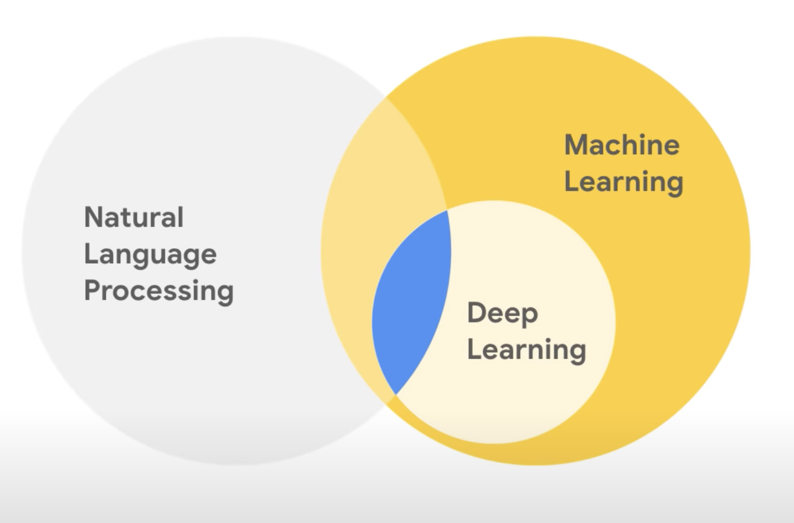
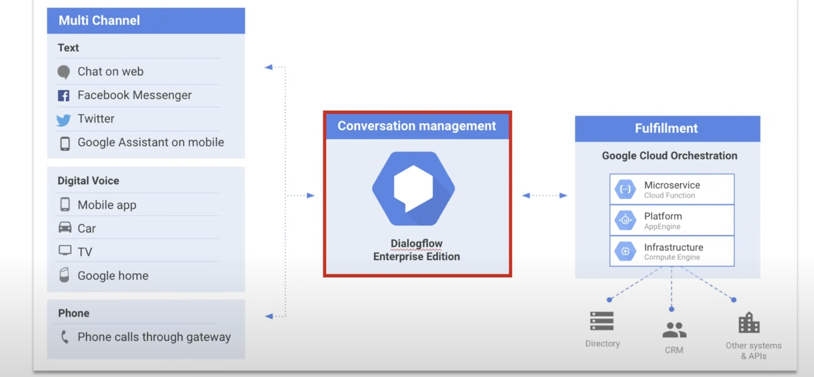
A natural language understanding (NLU) platform that makes it easy to design and integrate a conversational user interface into :
- mobile app
- web application
- device
- bot
- interactive voice response (IVR) system
Using Dialogflow, you can provide new and engaging ways for users to interact with your product.
-
Translate the Natural Language into machine readable data using ML models trained by the given set of examples.
-
It identifies about what the user is talking about, provides this data to the backend to take actions.
-
The backend performs the actions
Steps
-
Create an Agent (the chatbot application) within Dialogflow
- Collecting what the user is saying and mapping into an intent
- Taking an action on that intent
- Provide the user with the response
-
This all starts with a trigger event - Utterance
-
This is how the user invokes the chatbot
Hey Google, what is the temperature at NY City? - is an utterance
Hey Google - is a trigger
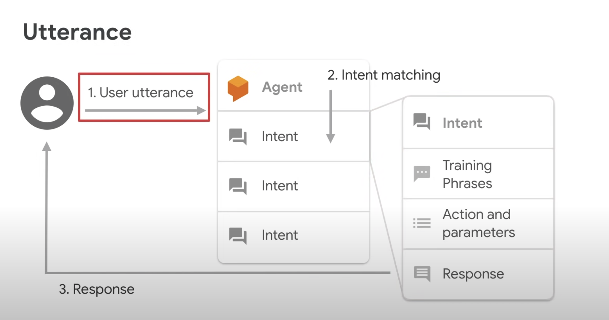
Hey Google, find the current stock of iPads from Inventory Management - is an utterance
find the current stock of iPads from Inventory Management is the invocation phase for the chatbot
Inventory Management is the invocation name
Key idea
- We need to understand: what is the user's intent?
User says: I want to set an appointment
set an appointment is the intent
User says: what are your hours of operation
hours of operation is the intent
- We provide Diagflow the different examples of user's intents
- Diagflow trains a ML model with many more similar phrases
- maps the user phrases into the right intent
- Diagflow trains a ML model with many more similar phrases
Intent Matching
| Training Phrase | Intent | Action and Parameters |
|---|---|---|
| I want to set an appointment | set an appointment | set_appointment() |
| what are your hours of operation | hours of operation | get_hoursOfOperation() |
- Parameters define variables we need to collect and store
Example
| User Phrase | Intent | Entities | Action and Parameters | Backend |
|---|---|---|---|---|
| I want to set an appointment at 10am tomorrow | set an appointment | 10am, tomorrow | set_appointment("10", "tomorrow) | Provide a dynamic response |
| Good Morning | greeting | greet() | Provide a static response: I am doing well |
Context
- is the method for the chatbot to store and access variables so it can exchange information from one intent to another in a conversation.
Dialogflow types of entities
Play with Dialogflow
-
Dialogflow creates GCP project to access logs and Cloud functions
-
Intents are mappings between a user's queries and actions fulfilled by your software.
User: good morning!
Bot: Hi! How are you doing?
User|Bot|Intent|Action|Sentiment| ---|---| good morning!|Hi! How are you doing?|Default Welcome Intent|input.welcome|Query Score: 0.9| weather in Boston now|Sorry, what was that?|Default Fallback Intent|input.unknown|Query Score: 0.1|
- Resource URL
https://dialogflow.googleapis.com/v2/projects/appointmentscheduler-kjsl/agent/sessions/bcef58f8-e2ad-0641-7655-06f1945f3713:detectIntent
- Request Payload
{
"queryInput": {
"text": {
"text": "good morning!",
"languageCode": "en"
}
},
"queryParams": {
"source": "DIALOGFLOW_CONSOLE",
"timeZone": "America/New_York",
"sentimentAnalysisRequestConfig": {
"analyzeQueryTextSentiment": true
}
}
}
- Response
{
"responseId": "0d8654f4-6b6e-4ac5-b99c-1054bcc653b3-e9fa6883",
"queryResult": {
"queryText": "good morning!",
"action": "input.welcome",
"parameters": {},
"allRequiredParamsPresent": true,
"fulfillmentText": "Hello! How can I help you?",
"fulfillmentMessages": [
{
"text": {
"text": [
"Hello! How can I help you?"
]
}
}
],
"intent": {
"name": "projects/appointmentscheduler-kjsl/agent/intents/ef927e0a-b805-4ada-9936-90aa79d710a5",
"displayName": "Default Welcome Intent"
},
"intentDetectionConfidence": 0.4507024,
"languageCode": "en",
"sentimentAnalysisResult": {
"queryTextSentiment": {
"score": 0.9,
"magnitude": 0.9
}
}
}
}
Response for "weather in Boston now"
{
"responseId": "1dbd8e9d-3440-40e6-9605-67e84e7b2b0c-e9fa6883",
"queryResult": {
"queryText": "weather in Boston now",
"action": "input.unknown",
"parameters": {},
"allRequiredParamsPresent": true,
"fulfillmentText": "Say that one more time?",
"fulfillmentMessages": [
{
"text": {
"text": [
"Say that one more time?"
]
}
}
],
"outputContexts": [
{
"name": "projects/appointmentscheduler-kjsl/agent/sessions/bcef58f8-e2ad-0641-7655-06f1945f3713/contexts/__system_counters__",
"lifespanCount": 1,
"parameters": {
"no-match": 2,
"no-input": 0
}
}
],
"intent": {
"name": "projects/appointmentscheduler-kjsl/agent/intents/40d635ef-6274-4141-b6b3-7971c6866f53",
"displayName": "Default Fallback Intent",
"isFallback": true
},
"intentDetectionConfidence": 1,
"languageCode": "en",
"sentimentAnalysisResult": {
"queryTextSentiment": {
"score": 0.1,
"magnitude": 0.1
}
}
}
}
Create Intent - Schedule Appointment
- Train the intent with what your users will say
- Provide examples of how users will express their intent in natural language.
- Adding numerous phrases with different variations and parameters will improve the accuracy of intent matching.
| Intent training phrase | Parameter Name | Entity | Resolved Value |
|---|---|---|---|
| set an appointment on Friday at 10 am | date-time | @sys.data-time | Friday at 10 am |
Response for
set an appointment on Tuesday at 9 am
{
"responseId": "676ca009-4f19-4e68-ac50-4f8db3c07fca-e9fa6883",
"queryResult": {
"queryText": "set an appointment on Tuesday at 9 am",
"parameters": {
"date-time": {
"date_time": "2022-01-04T09:00:00-05:00"
}
},
"allRequiredParamsPresent": true,
"fulfillmentText": "You all set for the appointment at 2022-01-04T09:00:00",
"fulfillmentMessages": [
{
"text": {
"text": [
"You all set for the appointment at 2022-01-04T09:00:00"
]
}
}
],
"intent": {
"name": "projects/appointmentscheduler-kjsl/agent/intents/95898256-556e-4e53-a7af-a595e9f8ff7f",
"displayName": "Schedule Appointment"
},
"intentDetectionConfidence": 1,
"languageCode": "en",
"sentimentAnalysisResult": {
"queryTextSentiment": {}
}
}
}
| User | Bot | Intent | Action | Sentiment | Comments |
|---|---|---|---|---|---|
| set an appointment on Tuesday at 9 am | You all set for the appointment at 2022-01-04T09:00:00 | Schedule Appointment | Not Available, Parameter:date-time, Value:{ "date_time": "2022-01-04T09:00:00-05:00" } | Query Score: 0.0 | |
| set an appointment | Not Available | Schedule Appointment | Not Available, Parameter:date-time, Value: | Query Score: 0.0 | missing date-time, requires slot filling |
Slot filling
- Make the entities as required
- Dialog flow will make sure it ask both date and time before it can respond back
| User | Bot | Intent | Action | Sentiment | Comments |
|---|---|---|---|---|---|
| set an appointment | What time and date you like to come in for the appointment? | Schedule Appointment | Not Available, Parameter:date-time, Value: | Query Score: 0.0 | missing date-time, requires slot filling prompt is asked |
| Monday 10 am | You all set for the appointment at 2022-01-03T10:00:00 | Schedule Appointment | Not Available, Parameter:date-time, Value:{ "date_time": "2022-01-04T09:00:00-05:00" } | Query Score: 0.0 | date-time is provided by the user |
Testing in our app
- Create a sample webapp using SFDX CLI
sfdx mohanc:app:webapp:gen -i /tmp/app.md -o df-appt.html \
-t 'Dialogflow Appointment testing app'
- Demo 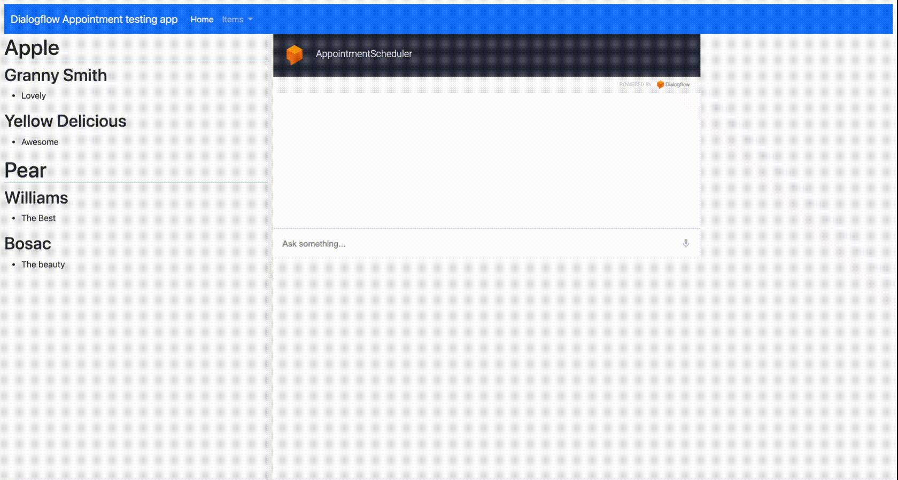
Dialog flow Integration with Dialogflow Messenger
<script src="https://www.gstatic.com/dialogflow-console/fast/messenger/bootstrap.js?v=1"></script>
<df-messenger
intent="WELCOME"
chat-title="AppointmentScheduler"
agent-id="d6e07c45-1523-4102-bf80-8fea7caf3caa"
language-code="en"
></df-messenger>
- Demo
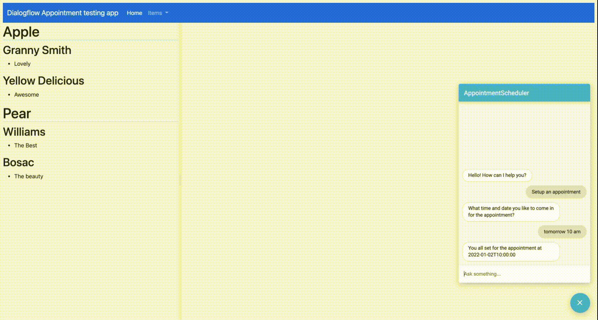
Entities
- System
@sys.date
@sys.time
@sys.number
@sys.unit-currency
@sys.percentage
@sys.address
@sys.phone-number
@sys.email
@sys.color
- Developer
- Session
Adding Developer Entity
| Entity Name | Value | Synonyms |
|---|---|---|
| AppointmentType | Car Inspection | State Inspection, Vehicle Inspection |
| AppointmentType | Scheduled Maintenance | 6 months Maintenance, Yearly Maintenance |
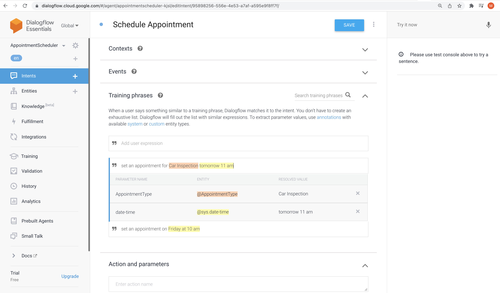 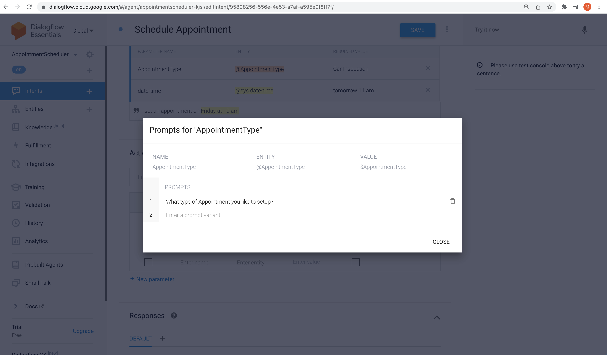 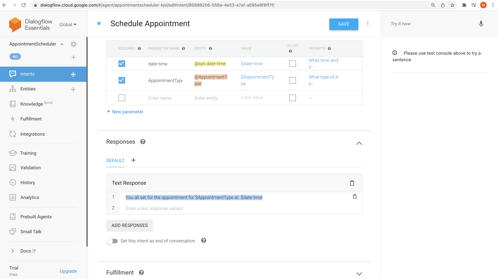
- Demo - slot filling
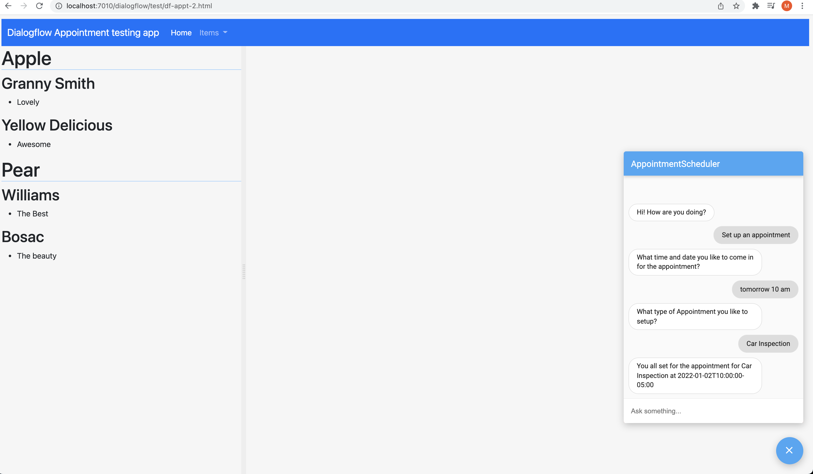
- Session Entity
- Session ID
- Have the information collected from the user from the rest of the conversion
- Say, we can ask the user for the Vehicle Type and get Toyota Camry, this value will be kept in the rest of the conversion
Integration options
- One-click telephony BETA
- Dialogflow Phone Gateway BETA
- Avaya
- SignalWire
- Voximplant
- AudioCodes
- Twilio

-
Telephony
- Genesys
- Twilio
-
Text Based
- Web Demo
- Dialogflow Messenger BETA
- Messenger from Facebook
- Workplace from Facebook BETA
- Slack
- Telegram
- LINE
Fulfillment - Integration with Google Calendar
| Intent | Fulfillment | Comments |
|---|---|---|
| Intent-1 | BizLogic-1 | |
| Intent-2 | BizLogic-2 |
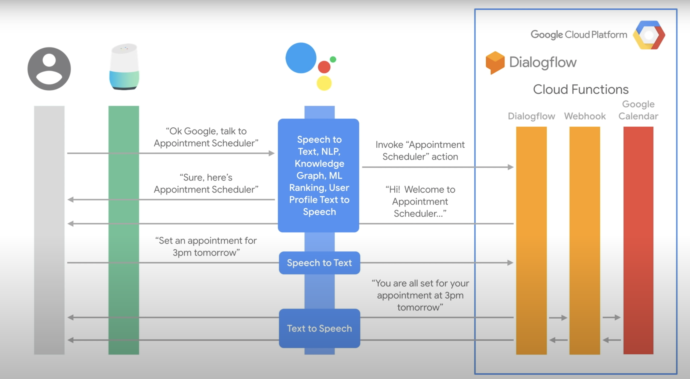
- webhook into Google Calendar
The web service (in our case Google Calendar) will receive a POST request from Dialogflow in the form of the response to a user query matched by intents with webhook enabled.
{
"type": "service_account",
"project_id": "projectid",
"private_key_id": "sk id here",
"private_key": "sk here",
"client_email": "appointmentscheduler-kjsl@appspot.gserviceaccount.com",
"client_id": "102792484459978676466",
"auth_uri": "https://accounts.google.com/o/oauth2/auth",
"token_uri": "https://oauth2.googleapis.com/token",
"auth_provider_x509_cert_url": "https://www.googleapis.com/oauth2/v1/certs",
"client_x509_cert_url": "https://www.googleapis.com/robot/v1/metadata/x509/xyz-kjsl%40appspot.gserviceaccount.com"
}
{
"name": "dialogflowFirebaseFulfillment",
"description": "This is the default fulfillment for a Dialogflow agents using Cloud Functions for Firebase",
"version": "0.0.1",
"private": true,
"license": "Apache Version 2.0",
"author": "Google Inc.",
"engines": {
"node": "10"
},
"scripts": {
"start": "firebase serve --only functions:dialogflowFirebaseFulfillment",
"deploy": "firebase deploy --only functions:dialogflowFirebaseFulfillment"
},
"dependencies": {
"actions-on-google": "^2.2.0",
"firebase-admin": "^5.13.1",
"firebase-functions": "^2.0.2",
"dialogflow": "^0.6.0",
"dialogflow-fulfillment": "^0.5.0"
}
}
/**
* Copyright 2017 Google Inc. All Rights Reserved.
*
* Licensed under the Apache License, Version 2.0 (the "License");
* you may not use this file except in compliance with the License.
* You may obtain a copy of the License at
*
* http://www.apache.org/licenses/LICENSE-2.0
*
* Unless required by applicable law or agreed to in writing, software
* distributed under the License is distributed on an "AS IS" BASIS,
* WITHOUT WARRANTIES OR CONDITIONS OF ANY KIND, either express or implied.
* See the License for the specific language governing permissions and
* limitations under the License.
*/
'use strict';
const functions = require('firebase-functions');
const {google} = require('googleapis');
const {WebhookClient} = require('dialogflow-fulfillment');
// Enter your calendar ID below and service account JSON below
const calendarId = "xyx@group.calendar.google.com";
const serviceAccount = "xyx-kjsl@appspot.gserviceaccount.com"; // Starts with {"type": "service_account",...
// Set up Google Calendar Service account credentials
const serviceAccountAuth = new google.auth.JWT({
email: serviceAccount.client_email,
key: serviceAccount.private_key,
scopes: 'https://www.googleapis.com/auth/calendar'
});
const calendar = google.calendar('v3');
process.env.DEBUG = 'dialogflow:*'; // enables lib debugging statements
const timeZone = 'America/New_York';
const timeZoneOffset = '-05:00';
exports.dialogflowFirebaseFulfillment = functions.https.onRequest((request, response) => {
const agent = new WebhookClient({ request, response });
console.log("Parameters", agent.parameters);
const appointment_type = agent.parameters.AppointmentType
function makeAppointment (agent) {
// Calculate appointment start and end datetimes (end = +1hr from start)
//console.log("Parameters", agent.parameters.date);
const dateTimeStart = new Date(Date.parse(agent.parameters.date.split('T')[0] + 'T' + agent.parameters.time.split('T')[1].split('-')[0] + timeZoneOffset));
const dateTimeEnd = new Date(new Date(dateTimeStart).setHours(dateTimeStart.getHours() + 1));
const appointmentTimeString = dateTimeStart.toLocaleString(
'en-US',
{ month: 'long', day: 'numeric', hour: 'numeric', timeZone: timeZone }
);
// Check the availibility of the time, and make an appointment if there is time on the calendar
return createCalendarEvent(dateTimeStart, dateTimeEnd, appointment_type).then(() => {
agent.add(`Ok, let me see if we can fit you in. ${appointmentTimeString} is fine!.`);
}).catch(() => {
agent.add(`I'm sorry, there are no slots available for ${appointmentTimeString}.`);
});
}
let intentMap = new Map();
intentMap.set('Schedule Appointment', makeAppointment);
agent.handleRequest(intentMap);
});
function createCalendarEvent (dateTimeStart, dateTimeEnd, appointment_type) {
return new Promise((resolve, reject) => {
calendar.events.list({
auth: serviceAccountAuth, // List events for time period
calendarId: calendarId,
timeMin: dateTimeStart.toISOString(),
timeMax: dateTimeEnd.toISOString()
}, (err, calendarResponse) => {
// Check if there is a event already on the Calendar
if (err || calendarResponse.data.items.length > 0) {
reject(err || new Error('Requested time conflicts with another appointment'));
} else {
// Create event for the requested time period
calendar.events.insert({ auth: serviceAccountAuth,
calendarId: calendarId,
resource: {summary: appointment_type +' Appointment', description: appointment_type,
start: {dateTime: dateTimeStart},
end: {dateTime: dateTimeEnd}}
}, (err, event) => {
err ? reject(err) : resolve(event);
}
);
}
});
});
}
Dialogflow Integration with Google Assistant Actions
- Actions in Google
- Way to extend the functionality of Google Assistant
- We can reach 500 million devices that support Google Assistant
- Smart speakers
- Phones
- Cars
- TVs
- Watches
Knowledge Base Support in Dialogflow chatbots
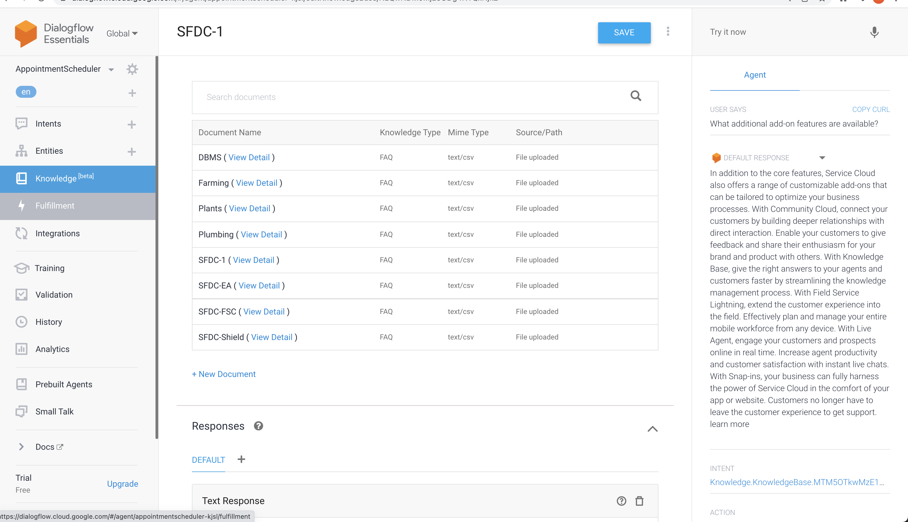
- Demo
Django frontend

Integration with Google Cloud ML
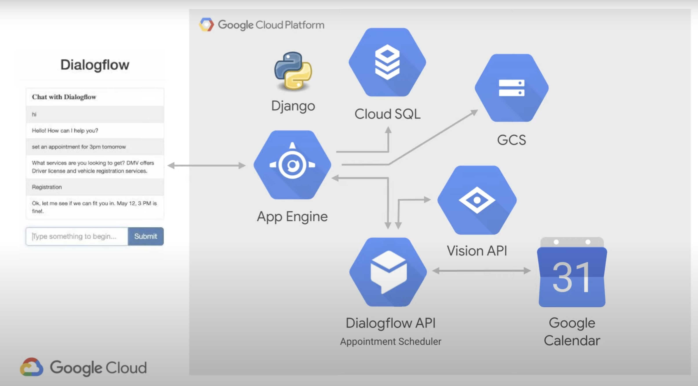
Dialogflow (CX](https://dialogflow.cloud.google.com/cx/projects)
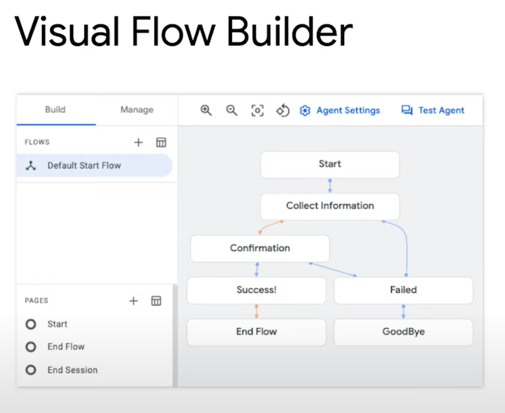 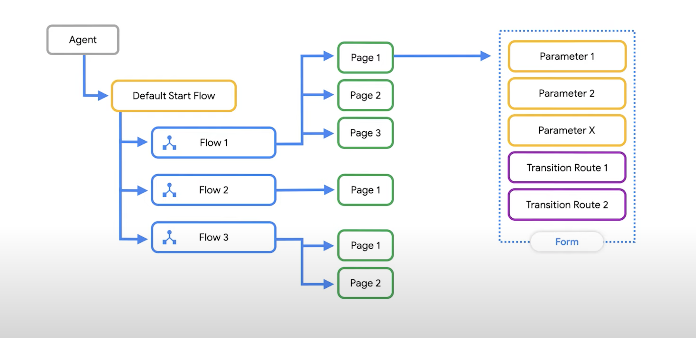
References
Videos
- What is Dialog flow
- Intents, Prompts, Appointment Builder
References
Rasa
Rasa is an open source machine learning framework for automated text and voice-based conversations.
Sample Training data in yaml
- NLU Data
nlu:
- intent: greet
examples: |
- Hi
- Hey!
- Hallo
- Good day
- Good morning
- intent: subscribe
examples: |
- I want to get the newsletter
- Can you send me the newsletter?
- Can you sign me up for the newsletter?
- intent: inform
examples: |
- My email is example@example.com
- random@example.com
- Please send it to anything@example.com
- Email is something@example.com
- Responses
responses:
utter_greet:
- text: |
Hello! How can I help you?
- text: |
Hi!
utter_ask_email:
- text: |
What is your email address?
utter_subscribed:
- text: |
Check your inbox at {email} in order to finish subscribing to the newsletter!
- text: |
You're all set! Check your inbox at {email} to confirm your subscription.
- Stores - connect intents with actions (utters)
stories:
- story: greet and subscribe
steps:
- intent: greet
- action: utter_greet
- intent: subscribe
- action: newsletter_form
- active_loop: newsletter_form
- Forms - collect information from the user
slots:
email:
type: text
mappings:
- type: from_text
conditions:
- active_loop: newsletter_form
requested_slot: email
forms:
newsletter_form:
required_slots:
- email
- Rules
rules:
- rule: activate subscribe form
steps:
- intent: subscribe
- action: newsletter_form
- active_loop: newsletter_form
- rule: submit form
condition:
- active_loop: newsletter_form
steps:
- action: newsletter_form
- active_loop: null
- action: utter_subscribed
19. Transformers
Papers
-
-
A new simple network architecture, the Transformer, based solely on attention mechanisms,
- dispensing with recurrence and convolutions entirely
-
Transformer generalizes well to other tasks by applying it successfully to English constituency parsing both with large and limited training data.
-
sequence modeling tasks are based on
- LSTM (long short-term memory)
- language modeling and machine translation
- generate a sequence of hidden states ht as a function of the previous hidden state ht−1 1 and the input for position t. This inherently sequential nature precludes parallelization within training examples, which becomes critical at longer sequence lengths, as memory constraints limit batching across examples.
-
Attention mechanisms have become an integral part of compelling sequence modeling and transduction models in various tasks, allowing modeling of dependencies without regard to their distance in the input or output sequences
-
Transformer
- a model architecture eschewing recurrence and instead relying entirely on an attention mechanism to draw global dependencies between input and output.
- allows for significantly more parallelization and can reach a new state of the art in translation quality after being trained for as little as twelve hours on eight P100 GPUs.
-
Usually we compute the hidden representations in parallel for all input and output positions.
-
In these models,the number of operations required to relate signals from two arbitrary input or output positions grows in the distance between positions
-
This makes it more difficult to learn dependencies between distant positions
-
In Transformer this is reduced to a constant number of operations
-
Self-attention, sometimes called intra-attention
- attention mechanism relating different positions of a single sequence in order to compute a representation of the sequence.
- relying entirely on self-attention to compute representations of its input and output without using sequence aligned RNNs or convolution.

Encoder
-
The encoder is composed of a stack of
N = 6identical layers -
Each Layer has 2 Sub Layers, each Sub Layer has:
- multi-head self-attention
- position-wise fully connected feed-forward network
-
Sublayer(x)is the function implemented by the sub-layer itself. -
Output of each sub-layer is
LayerNorm(x + Sublayer(x)) -
To facilitate these residual connections, all sub-layers in the model, as well as the embedding layers, produce outputs of dimension
dmodel = 512
Decoder
- also composed of a stack of
N = 6identical layers - In addition to the two sub-layers in each encoder layer, the decoder inserts a third sub-layer
- which performs multi-head attention over the output of the encoder stack
- Similar to the encoder, we employ residual connections around each of the sub-layers, followed by layer normalization
- We also modify the self-attention sub-layer in the decoder stack to prevent positions from attending to subsequent positions.
- This masking, combined with fact that the output embeddings are offset by one position
- ensures that the predictions for position
ican depend only on the known outputs at positions< i.
- ensures that the predictions for position
- This masking, combined with fact that the output embeddings are offset by one position
Attention
- Can be described as mapping a query and a set of key-value pairs to an output,
- where the query, keys, values, and output are all vectors.
- The output is computed as a weighted sum of the values
- where the weight assigned to each value is computed by a compatibility function of the query with the corresponding key.
-
GPT
Generatively Pretrained Transformer (GPT)
Building GPT
input_txt = "Once upon a time there was a king called Askhoka. He planted fruit bearing trees for the benefit of the animals and humans"
chars = sorted(set(input_txt))
vocab_size = len(chars)
print (''.join(chars)
# to integer (encoding)
stoi = {ch:i for i,ch in enumerate(chars)}
itos = {i:ch for i,ch in enumerate(chars)}
encode = lambda s: [ stoi[c] for c in s]
decode = lambda l: [ itos[i] for i in l ]
encode('thompson')
decode(encode('thompson'))
''.join(decode(encode('thompson')))
References
20. Tools
Infrastructure as code
Benefits
- Repeatable
- Infrastructure automation
- Integration with CI/CD
- Git integration (GitOps)
- Visibility and auditing
- Doc source of the infrastructure
Imperative way
def setup(env_name):
setupEC2Instance(env_name)
buckets = ['one', 'two', 'three']
for bucket in buckets:
setupEC2Bucket(env_name, bucket)
- lot of work!
Declarative
-
GCP - Deployment Manager
-
AWS - AWS CloudFormation
-
Azure - Resource Manager
-
For multi-cloud Terraform
- infrastructure as code software tool that provides a consistent CLI workflow to manage hundreds of cloud services.
- Open source
- Uses a language hcl HashiCorp Config Language
resource "aws_instance" "example" {
ami = "data.aws_ami.redhat.id"
instance_type = "t3.micro"
network_interface {
# ...
}
}
- remembers the state of the already provisioned resources - [Idempotence](https://en.wikipedia.org/wiki/ Idempotence) - certain operations can be applied multiple times without changing the result beyond the initial application.
Installing Terraform CLI
brew tap hashicorp/tap
brew install hashicorp/tap/terraform
- Usage
% terraform
Usage: terraform [global options] <subcommand> [args]
The available commands for execution are listed below.
The primary workflow commands are given first, followed by
less common or more advanced commands.
Main commands:
init Prepare your working directory for other commands
validate Check whether the configuration is valid
plan Show changes required by the current configuration
apply Create or update infrastructure
destroy Destroy previously-created infrastructure
All other commands:
console Try Terraform expressions at an interactive command prompt
fmt Reformat your configuration in the standard style
force-unlock Release a stuck lock on the current workspace
get Install or upgrade remote Terraform modules
graph Generate a Graphviz graph of the steps in an operation
import Associate existing infrastructure with a Terraform resource
login Obtain and save credentials for a remote host
logout Remove locally-stored credentials for a remote host
output Show output values from your root module
providers Show the providers required for this configuration
refresh Update the state to match remote systems
show Show the current state or a saved plan
state Advanced state management
taint Mark a resource instance as not fully functional
test Experimental support for module integration testing
untaint Remove the 'tainted' state from a resource instance
version Show the current Terraform version
workspace Workspace management
Global options (use these before the subcommand, if any):
-chdir=DIR Switch to a different working directory before executing the
given subcommand.
-help Show this help output, or the help for a specified subcommand.
-version An alias for the "version" subcommand.
- Demo